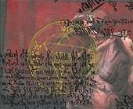

Les Terres de Kirin Tor
Ère du Renouveau [280]
Ère du Conflit [287]
Troisième Ère [406]
Quatrième Ère [332]
Lune de la Force [149]
Décade du Panda [72]
[Gwendolline] Le Bruissement des Vagues - Partie 7
Le feu resplendissant dans la place principale du village, une elfine approcha[Ereghion] Lettre 18
Vêtu de sa robe du dévot et de ses atours de prêtresse, son pat cérémonial, se rapprocha vers le flamboyant.
A coté du chef du village, un autre Troll, vêtu de ses habits de cérémonie et de sa ... Lire la suite >>>
Cela fait longtemps que tu n'avais plus recu de lettre.[Darzag] La vision
Je plaide coupable, mais avec de grosses circonstances atténuantes.
Mais le mieux est que je t'en explique le pourquoi.
A ma dernière missive, je n'étais pas la même personne, au sens propre.
Tout ce que je me rappe ... Lire la suite >>>
Ashenvale ... Ce bois paisible où eut lieu la cérémonie du cerf, par laquelle l'esprit du clan naquit et scella le destin des siens : ensemble jusqu'à la fin.[Promethee] Mon journal depuis les brasseurs, 2eme jour
Darzag se tenait à l'endroit précis où elle s'était tenu, à l'endroit précis où lui et sa fille, Enilaë, se déco ... Lire la suite >>>
Je suis reparti en chasse cet apres midi, rien de bien glorieux sauf vers 20 Heure, encore une fois, il faut croire que c'est quotidien, la Croisée fut attaquée. Encore une fois, malgrés ma faiblesse face a l'enemi je participais à la defence de mon foyé. Il faut croire que ... Lire la suite >>>Tournoi de l'Alliance
Oyez, Oyez braves gens de l'Alliance, en ce jour je viens vous présenter un Tournoi.
Moi, Naelcya Winterdom Maître Adjoint de l'Ordre du Corbeau propose un grand évènement concernant tout ceux qui voudront participer.
Effectivement, dans deux semaines commencera le Tournoi de l'Alliance. Aujourd'hui nous commençons les inscriptions en ce qui concernent les personnes qui souhaiteraient nous aider à l'Organisation, à l'Arbitrage et au maintient de l'ordre.
A partir de Lundi, les inscriptions au Tournoi commenceront. En effet, chaque guilde pourra choisir son Champion, qui la représentera au combat. Un membre d'une guilde ayant déjà un Champion inscrit pourra tout de même faire parti des Arbitres, Organisateurs ou au Maintient de l'Ordre.
Le Tournoi se déroulera dans l'Arène des Gurubashi, le 12 Novembre. ( Dâte non encore réellement fixée, apte à être repoussée. ) Ceux qui n'ont pas de guilde pourront toujours venir s'inscrire.
Les règles du tournoi seront :
- Des Duels en trois manches, deux manches gagnantes. Les duels seront tirer au sort au premier tour et nous continuerons le tournoi en un arbre, jusqu'à ce que le Champion de l'Alliance soit déclaré dans le duel final.
- Seuls les arbitres et les combattants apelés devront être dans l'Arène, ce qui empêchera un gros flux et trop de monde concentré dans l'Arène.
- Les sorts de soins sont autorisés mais pas les potions.
- Aucune potion, parchemin ou autre ne seront admis. Le personnage n'aura droit qu'à ses propres sorts, aucune protection lancé par quelqu'un d'autre avant le duel ( Question de fairplay, ce sont des duels après tout )
- Les personnages sont considérés comme ko, les prêtres ou paladins désignés comme soignants pourront être dans l'Arène afin de s'occuper des perdants comme des gagnants. Aucune Mort ne sera tolérée.
- Les spéctateurs ne devront pas entrer dans l'Arène.
- Le respect mutuel est de mise, organisateurs, arbitres ou protecteurs de l'ordre ne sont là que pour le bon déroulement de l'évenement, ils ne sont pas là pour vous donner des ordres.
- Amusons nous, oublions les champs de bataille et le sang. Montrons notre force, notre intelligence face à un adversaire de taille.
Le Champion de l'Alliance gardera son titre un mois. Si ce Tournoi test fonctionne, nous essairons d'en organiser un tous les mois. Amis, tout le monde à sa chance.
Je le répète, nous vous invitons à vous présenter pour l'organisation, l'Arbitrage et le Maintient de l'ordre, envoyez une missive à Naelcya.
N'oublions pas, dans une semaine précisément, les Champions de guilde et autre pourront s'inscrire au Tournoi, en envoyant une missive à Naelcya.
Que le sang ne coule pas, que le sourire soit sur les lèvres, que l'Alliance se sert les coudes.
Que la Lumière vous guide tous.
( Pour plus ample informations : http://forums-fr.wow-europe.com/thread.aspx?fn=wow-realm-kirintor-fr&t=7185&p=1&tmp=1#post7185 )
[Razkan] Cauchemar chez la Reveuse
Moi, Naelcya Winterdom Maître Adjoint de l'Ordre du Corbeau propose un grand évènement concernant tout ceux qui voudront participer.
Effectivement, dans deux semaines commencera le Tournoi de l'Alliance. Aujourd'hui nous commençons les inscriptions en ce qui concernent les personnes qui souhaiteraient nous aider à l'Organisation, à l'Arbitrage et au maintient de l'ordre.
A partir de Lundi, les inscriptions au Tournoi commenceront. En effet, chaque guilde pourra choisir son Champion, qui la représentera au combat. Un membre d'une guilde ayant déjà un Champion inscrit pourra tout de même faire parti des Arbitres, Organisateurs ou au Maintient de l'Ordre.
Le Tournoi se déroulera dans l'Arène des Gurubashi, le 12 Novembre. ( Dâte non encore réellement fixée, apte à être repoussée. ) Ceux qui n'ont pas de guilde pourront toujours venir s'inscrire.
Les règles du tournoi seront :
- Des Duels en trois manches, deux manches gagnantes. Les duels seront tirer au sort au premier tour et nous continuerons le tournoi en un arbre, jusqu'à ce que le Champion de l'Alliance soit déclaré dans le duel final.
- Seuls les arbitres et les combattants apelés devront être dans l'Arène, ce qui empêchera un gros flux et trop de monde concentré dans l'Arène.
- Les sorts de soins sont autorisés mais pas les potions.
- Aucune potion, parchemin ou autre ne seront admis. Le personnage n'aura droit qu'à ses propres sorts, aucune protection lancé par quelqu'un d'autre avant le duel ( Question de fairplay, ce sont des duels après tout )
- Les personnages sont considérés comme ko, les prêtres ou paladins désignés comme soignants pourront être dans l'Arène afin de s'occuper des perdants comme des gagnants. Aucune Mort ne sera tolérée.
- Les spéctateurs ne devront pas entrer dans l'Arène.
- Le respect mutuel est de mise, organisateurs, arbitres ou protecteurs de l'ordre ne sont là que pour le bon déroulement de l'évenement, ils ne sont pas là pour vous donner des ordres.
- Amusons nous, oublions les champs de bataille et le sang. Montrons notre force, notre intelligence face à un adversaire de taille.
Le Champion de l'Alliance gardera son titre un mois. Si ce Tournoi test fonctionne, nous essairons d'en organiser un tous les mois. Amis, tout le monde à sa chance.
Je le répète, nous vous invitons à vous présenter pour l'organisation, l'Arbitrage et le Maintient de l'ordre, envoyez une missive à Naelcya.
N'oublions pas, dans une semaine précisément, les Champions de guilde et autre pourront s'inscrire au Tournoi, en envoyant une missive à Naelcya.
Que le sang ne coule pas, que le sourire soit sur les lèvres, que l'Alliance se sert les coudes.
Que la Lumière vous guide tous.
( Pour plus ample informations : http://forums-fr.wow-europe.com/thread.aspx?fn=wow-realm-kirintor-fr&t=7185&p=1&tmp=1#post7185 )
I ) Cauchemar chez la Rêveuse[Razkan] L'écho des Sin'dorei
A) La Grâce des cieux
Un fin filet de lumière traverse lépaisse forêt chatoyée desprits légendaires, tous fils et fille de Cénarius. Avec des sabots lourds, la peau aussi clair que la lune, larmure de cuir qui ne luit ... Lire la suite >>>
C) Lécho des Sindorei[Phalenopsis] Pleurs...
Une énergie rouge éclaira la salle, la druidesse toujours à terre restant inconsciente. Du cristal, ou plus probablement de son énergie, apparut un Elfe, qui ressemblait vaguement à un Elfe de la Nuit mais à laura magique invisible très an ... Lire la suite >>>
[justify]En une décennie cette plage avait énormément changée. Lair même semblait corrompu, certes bien moins quailleurs dans ce vaste monde, mais tout de même.[Cymbelîne] Page 25: Doutes...
Il avait pour ainsi dire grandi en ce lieu, appris à nager dans cette eau, tanné sa première peau sur ce banc d ... Lire la suite >>>
Cher Journal,[Valnar] Confrontation
Combien de jours cela fait il?
J'ai l'impression d'avoir dormi et d'avoirs fait les plus atroces cauchemars
Comme si j'avais été spectatrice de ma propre folie sans pouvoir ni la contrôler, ni intervenir.
Il est entré en moi, le Mal, il a coulé dans mes v ... Lire la suite >>>
La pluie s'abattait avec force sur le sol boueux de cette petite clairière de Tirisfal, une tempête approchait, Mais Valnar n'y prêtait pas attention, En face de lui son propre visage lui souriait d'un air sinistre. Comme en ... Lire la suite >>>Le Grand buffet de Talroc
A lheure de la pause chez les péons, dans leur lieu de repos habituel : la Taverne dOgrimmar ; discutent ils bruyamment avec un habitué de la race des Gobelins. Le sujet de la discussion ne manque pas de se faire entendre parmi les passants
" Mais lgrand buffet dTalroc voyons !
Le troisième jour de la Décade du Panda! (Deuxième Dimanche de Novembre, soit le 13)
Lendroit ? Oh ptit coin paisible au sud du Poste de garde extérieur à la frontière entre Durotar et les Tarides Il y a une écurie pour ceux qui voyagent en monture et une habitation vide où sera surement cuisiné le gros des plats. Plutôt paisible comme coin ça ne vous dit rien ? Bon sang faut vraiment tout vous expliquez à vous Tien, regarde smorceau dparchemin là
( Voir image ici : http://img383.imageshack.us/img383/1696/lieurencontre5nh.jpg )
Hum ? Lâchez mon épaule bon sang ! Que voulez vous maintenant ? Les mets du repas ? Mais par les dents en or dGazmul, vous ne savez vraiment rien ? Mais vous savez, moi ce nest pas mon truc la parlotte quand jai lgossier sec Ah cest gentil, Morag, remet moi ça ! Hum, voilà un bon porto ! Pardon ? Ah oui, le buffet Il y aura prévu un buffet froid et un chaud. Quoi ? Dites, vous êtes exigeants vous savez ! Je nai pas que ça à Oh cest gentil ça, Morag, fait péter lporto ! Bon jvous préviens, la cuisine spas mon truc, jmappel pas Talroc hein...
Lbuffet froid sera composé dune entrée d[ufs aux herbes] à mangé avec un [Beignet de Crabe], parait qules herbes rendent agréable le mélange de luf avec larôme du Crabe Encore un truc de cuistot, je ny comprends rien ! Ensuite, la sélection principale cest de la [Morue rochécaille] accompagné de [Palourdes bouillies], un bon truc dchez nous ça, jme demande doù il tien la recette, même ma mère maurait brûlé loreille gauche pour connaître ça ! En tout cas, cest du bon
Lbuffet chaud quand à lui cest une entrée en [Brouet de Rat] avec des [Tête de champignon sylvestre], parait que cest pour larôme, masqué lrat avec un truc des forets.. Aller savoir où il a eut lidée de pareille combinaison. Après lplat principale serait composé de coriaces [Côtes de porc séchées] avec un bon [Grand Steak dours] saignant ! Humm Si jétais invité jcrois bien qujsauterai sur la sélection chaude !
Y a même un menu pour les péons, sûrement pour nourrir les gueux quil narriverait pas à bouté. Ou ptetre cest les deux péons qui squoitent son lieu ? Bref, il disait quil aurait un peu d[Morceau de pain rassis] et de l[Eau de Source] Ouais, un truc à péon quoi ! Ahah !
Le Gobelin remarquant les regards assassins de ses interlocuteurs ravalla difficilement sa salive avant de continuer
...Ah oui et autre point important jimagine, il namène aucune boisson. Mis à part pour lui-même hein, ça va dsoit, sale ivrogne quil est. Dtoute manière il a toujours un sac remplit dnourriture et dboissons sur lui, un vrai brasseur pandaren ctOrc là ! Tien dailleurs il conseil ç tous le [Jus de Melon] pour le buffet froid et du [Pinot Noire] pour lchaud. Après bien sur, y aura les Taurens avec leur lait et les réprouvés avec leur jus lunaire, menfin les gens boivent la pisse quils veulent hein
Maintenant, le truc qui est bien jimagine cest quil y aura un peu danimation. Bah, dun coter un repas cest jamais calme hein. Rien qupour parler faut avoir dla voix. Ou du muscle, cest vous qui voyez ! Enfin voilà, suite au repas, ou durant celui-ci, si les clients euh pardon invités hein, bah ils sennuis bah Mince alors, comme il appel ce jeu dpirate ? Ah oui, le « Fulug Horn » ou « monstres combattants » un truc du genre, moi et lorc hein Bah oui, je sais bien parler, quand même, vous mimaginez marchander sur les cinq côtes la langue Oui daccord, je continu ! Donc crite là cest une espèce de duel à mains nues et puis tout lcorps aussi dailleurs, sauf un tabard pour représenter lhonneur de son clan un vieux truc dorc, vous ne connaissez pas ? Zetes bien des péons vo Attend il y a erreur ! Ouaïlle !... Oui je continu, vous savez je ne parle pas plus vite quand on me tape dessus ! Daccord, jai rien dit, frappez pas !... Donc cest espèce de rituel guerrier quoi, où chacun doit se battre autour dun feu de camp en se narguant et ensuite se sauter dsus comme des bêtes sauvages Mais là où jtrouve ça drôle, cest quau préalable, les duellistes doivent ingurgités du [Chili de souffle de dragon] concocté au préalable par un chaman Mais bon, là ce sera Talroc bien évidement qui aura le rôle de les cuisinés.
Enfin une soirée animée ! Haha ! Jespère que je serai invité dailleurs Hum ? Nan mais vous rêvez, il ne va pas inviter des péons comme vous ! La soirée est uniquement réservée à ses plus proches connaissances. Tien dailleurs je vais peu être baissé le prix de mes bijoux quil recherchait Quoi encore ? Jvous avais dit que vous... ah, qui y viens ? Il me semble quelques gars du clan des Derniers Gardiens, des Deerantlers, du Mahkeen, les anciens membres dla Garde Militaire, lreste jme souviens plus Des individus de tous bords, Frères de guerre, Soleil noir aussi il me semble
Parait aussi quà la suite de cela, selon si son savoir-faire est apprécié ou non, il vendra ses services comme traiteur pour des inaugurations, réunions, fêtes, mariages, anniversaires et compagnie Si il était gobelin jlaurai dit ambitieux, mais pour un orc il est plutôt fou Non ? "
~~~~~~~~~~~~~~~~~~~~~~~~~~
HRP : La date est provisoire, selon qui sera disponible et bien sur intéressé pour venir (excuses rp ou hrp confondus).
La durée dépendra également du nombre de personnes et de lambiance générale de la soirée. Je prévois environ 3 bonnes heures pour linstant, comptant les discussions, lmangé, la petite animation et les éventuelles surprises dut au rp de chacun ^^
Liste officielle des invités :
Grimlokt, Glaeph, Razkan, Maddead (jai malheureusment entendu que se dernier avait arrêté wow, Talroc tape dans la dépression maintenant quil a perdu son rivale de joute !), Maguth, Makhata, Chimere, Zammalthor, Cygüe, Viezna, Darzag, Enilaë, Theyliis, Attal, Yazil, Squall, Kléophis, Ethom, Nohan, Fartha, Gurn, Indranée et Henk.
Bien sur, je cible certaines personnes en particulier mais cest par rapport au rp partager avec Talroc. Dautres membres de chaque clan seront les bienvenues, surtout si ils reconnaissent Talroc de réputation ou dune volonté détendre le roleplay avec le personnage en question (ou celui des autres bien sur, cest un buffet, tout le monde agira à sa guise) donc les compagnons/compagnes, serviteurs et familiers pourront aussi venir ^^
Les repas ont été préparez dans le respect de la tradition : farming :O
Tout vien donc de ma poche. Rien nest demander puisque vous êtes les invités, mais si vous désirez faire des dons Surtout en sacs de flammes ou viande mystère pour les chilis (lvl 29 hors AH c'est pas dans mes cordes ^^).. Dailleurs, pour le combat, faut être lvl 35 minimum (lvl du chili oblige).
Talroc.
[Gwendolline] Le Bruissement des Vagues - Partie 8
" Mais lgrand buffet dTalroc voyons !
Le troisième jour de la Décade du Panda! (Deuxième Dimanche de Novembre, soit le 13)
Lendroit ? Oh ptit coin paisible au sud du Poste de garde extérieur à la frontière entre Durotar et les Tarides Il y a une écurie pour ceux qui voyagent en monture et une habitation vide où sera surement cuisiné le gros des plats. Plutôt paisible comme coin ça ne vous dit rien ? Bon sang faut vraiment tout vous expliquez à vous Tien, regarde smorceau dparchemin là
( Voir image ici : http://img383.imageshack.us/img383/1696/lieurencontre5nh.jpg )
Hum ? Lâchez mon épaule bon sang ! Que voulez vous maintenant ? Les mets du repas ? Mais par les dents en or dGazmul, vous ne savez vraiment rien ? Mais vous savez, moi ce nest pas mon truc la parlotte quand jai lgossier sec Ah cest gentil, Morag, remet moi ça ! Hum, voilà un bon porto ! Pardon ? Ah oui, le buffet Il y aura prévu un buffet froid et un chaud. Quoi ? Dites, vous êtes exigeants vous savez ! Je nai pas que ça à Oh cest gentil ça, Morag, fait péter lporto ! Bon jvous préviens, la cuisine spas mon truc, jmappel pas Talroc hein...
Lbuffet froid sera composé dune entrée d[ufs aux herbes] à mangé avec un [Beignet de Crabe], parait qules herbes rendent agréable le mélange de luf avec larôme du Crabe Encore un truc de cuistot, je ny comprends rien ! Ensuite, la sélection principale cest de la [Morue rochécaille] accompagné de [Palourdes bouillies], un bon truc dchez nous ça, jme demande doù il tien la recette, même ma mère maurait brûlé loreille gauche pour connaître ça ! En tout cas, cest du bon
Lbuffet chaud quand à lui cest une entrée en [Brouet de Rat] avec des [Tête de champignon sylvestre], parait que cest pour larôme, masqué lrat avec un truc des forets.. Aller savoir où il a eut lidée de pareille combinaison. Après lplat principale serait composé de coriaces [Côtes de porc séchées] avec un bon [Grand Steak dours] saignant ! Humm Si jétais invité jcrois bien qujsauterai sur la sélection chaude !
Y a même un menu pour les péons, sûrement pour nourrir les gueux quil narriverait pas à bouté. Ou ptetre cest les deux péons qui squoitent son lieu ? Bref, il disait quil aurait un peu d[Morceau de pain rassis] et de l[Eau de Source] Ouais, un truc à péon quoi ! Ahah !
Le Gobelin remarquant les regards assassins de ses interlocuteurs ravalla difficilement sa salive avant de continuer
...Ah oui et autre point important jimagine, il namène aucune boisson. Mis à part pour lui-même hein, ça va dsoit, sale ivrogne quil est. Dtoute manière il a toujours un sac remplit dnourriture et dboissons sur lui, un vrai brasseur pandaren ctOrc là ! Tien dailleurs il conseil ç tous le [Jus de Melon] pour le buffet froid et du [Pinot Noire] pour lchaud. Après bien sur, y aura les Taurens avec leur lait et les réprouvés avec leur jus lunaire, menfin les gens boivent la pisse quils veulent hein
Maintenant, le truc qui est bien jimagine cest quil y aura un peu danimation. Bah, dun coter un repas cest jamais calme hein. Rien qupour parler faut avoir dla voix. Ou du muscle, cest vous qui voyez ! Enfin voilà, suite au repas, ou durant celui-ci, si les clients euh pardon invités hein, bah ils sennuis bah Mince alors, comme il appel ce jeu dpirate ? Ah oui, le « Fulug Horn » ou « monstres combattants » un truc du genre, moi et lorc hein Bah oui, je sais bien parler, quand même, vous mimaginez marchander sur les cinq côtes la langue Oui daccord, je continu ! Donc crite là cest une espèce de duel à mains nues et puis tout lcorps aussi dailleurs, sauf un tabard pour représenter lhonneur de son clan un vieux truc dorc, vous ne connaissez pas ? Zetes bien des péons vo Attend il y a erreur ! Ouaïlle !... Oui je continu, vous savez je ne parle pas plus vite quand on me tape dessus ! Daccord, jai rien dit, frappez pas !... Donc cest espèce de rituel guerrier quoi, où chacun doit se battre autour dun feu de camp en se narguant et ensuite se sauter dsus comme des bêtes sauvages Mais là où jtrouve ça drôle, cest quau préalable, les duellistes doivent ingurgités du [Chili de souffle de dragon] concocté au préalable par un chaman Mais bon, là ce sera Talroc bien évidement qui aura le rôle de les cuisinés.
Enfin une soirée animée ! Haha ! Jespère que je serai invité dailleurs Hum ? Nan mais vous rêvez, il ne va pas inviter des péons comme vous ! La soirée est uniquement réservée à ses plus proches connaissances. Tien dailleurs je vais peu être baissé le prix de mes bijoux quil recherchait Quoi encore ? Jvous avais dit que vous... ah, qui y viens ? Il me semble quelques gars du clan des Derniers Gardiens, des Deerantlers, du Mahkeen, les anciens membres dla Garde Militaire, lreste jme souviens plus Des individus de tous bords, Frères de guerre, Soleil noir aussi il me semble
Parait aussi quà la suite de cela, selon si son savoir-faire est apprécié ou non, il vendra ses services comme traiteur pour des inaugurations, réunions, fêtes, mariages, anniversaires et compagnie Si il était gobelin jlaurai dit ambitieux, mais pour un orc il est plutôt fou Non ? "
~~~~~~~~~~~~~~~~~~~~~~~~~~
HRP : La date est provisoire, selon qui sera disponible et bien sur intéressé pour venir (excuses rp ou hrp confondus).
La durée dépendra également du nombre de personnes et de lambiance générale de la soirée. Je prévois environ 3 bonnes heures pour linstant, comptant les discussions, lmangé, la petite animation et les éventuelles surprises dut au rp de chacun ^^
Liste officielle des invités :
Grimlokt, Glaeph, Razkan, Maddead (jai malheureusment entendu que se dernier avait arrêté wow, Talroc tape dans la dépression maintenant quil a perdu son rivale de joute !), Maguth, Makhata, Chimere, Zammalthor, Cygüe, Viezna, Darzag, Enilaë, Theyliis, Attal, Yazil, Squall, Kléophis, Ethom, Nohan, Fartha, Gurn, Indranée et Henk.
Bien sur, je cible certaines personnes en particulier mais cest par rapport au rp partager avec Talroc. Dautres membres de chaque clan seront les bienvenues, surtout si ils reconnaissent Talroc de réputation ou dune volonté détendre le roleplay avec le personnage en question (ou celui des autres bien sur, cest un buffet, tout le monde agira à sa guise) donc les compagnons/compagnes, serviteurs et familiers pourront aussi venir ^^
Les repas ont été préparez dans le respect de la tradition : farming :O
Tout vien donc de ma poche. Rien nest demander puisque vous êtes les invités, mais si vous désirez faire des dons Surtout en sacs de flammes ou viande mystère pour les chilis (lvl 29 hors AH c'est pas dans mes cordes ^^).. Dailleurs, pour le combat, faut être lvl 35 minimum (lvl du chili oblige).
Talroc.
[i]Cher journal,[Denindal] une vie en cours
Voici maintenant plus de deux cycles lunaires que je suis ici.
Après mon mariage avec Ragnarok, la vie au village pris une tournure différente pour moi.
Jétais jusque là, une inconnue. Un hôte, tout au plus
Un hôte qui reste avant toute une étrangèr ... Lire la suite >>>
Univers étroit et noir, une cage sans barreau ni fenêtre, rempli d'un liquide dégoûtant. Où suis-je, j'entends des douces voix et des cris atroce, ces cris m'apparaissent comme venant d'un endroit situé au dessus de ma prison. Je fus comme aspiré vers le bas, vers la lumière ... Lire la suite >>>[Cherrylinoa] Le mariage de Crego
Cherrylinoa range la valise en bas de son armoire. Elle ferme la porte, recule et regarde la chambre.[Melugaia] Attirance naturelle
L'Ordre des Eléments Sacrés, qui vient de l'intégrer, lui a mit à disposition des appartements ainsi qu'une boutique pour son artisanat. Jamais elle n'aurait espéré tant. A ... Lire la suite >>>
Il mavait abordé un jour à Gadzetzan. Mon frère de bâton Javais déjà eu de la peine à détacher mon regard du sien. Un druide ours son aura était bienveillante et un peu triste comme si un fardeau pesait sur ses épaules. Il était jeune trop jeune pour un tel ... Lire la suite >>>[Talroc] Mon Buffet !
"Quel imbécile ce Morag, si je navais eut mon buffet, jaurai continué de débattre avec lui sur la valeur grandissante de la bière de sombrelune par rapport à son piteux porto ! Menfin Voyant lheure, je quittai le « trou » dOgrimmar et prit la route principale de Durotar ... Lire la suite >>>[Promethee] Mon journal depuis les brasseurs, jours 3
Il me semble de plus en plus evident que progresser seul dans ce monde est impossible. Les tarides sud, les serres rocheuses tous ces endroits semblent infranchissable pour un guerrier solitaire. J'espere que bientot un grand brasseur m'accompagnera dans quelques un de mes v ... Lire la suite >>>[Cymbelîne] Page 26: Faux Semblants
Cher Journal,[Averell] Retour de l'ennemi
Peut on dire que les choses sont redevenus comme avant?
Non, j'en doute, plus rien ne sera désormais comme avant.
Depuis quelque temps Blasius se montre distant et froid avec moi. Nous passons moins de temps ensemble qu'avant. Parfois, j'ai même l'impressi ... Lire la suite >>>
à venir ... Lire la suite >>>[Turannos] [Histoire] Quatrième ère.
-Les démons sont innombrables et leurs légions hantent ces terres. Mais nous ne devons pas perdre espoir, car même si cela doit prendre léternité, les Templiers de Noirs les retrouveront et les décimeront tous.[Phalenopsis] Un signe
*Le démon tomba au sol dans un hurlement de douleur*
« Ha ... Lire la suite >>>
[justify]Phalé sortit de l'eau, les goutelettes perlant le long de son corps élancé. Ses muscles étaient endoloris, ses membres engourdis par le froid.[Gaark] Le Feu est éteint
Un sourire aux lèvres, il remercia silencieusement la Nature de lui avoir envoyé ce signe.
Un daim sain, rare désormai ... Lire la suite >>>
Gaark ne resta pas très longtemps à Long Guet. Il conversa brièvement avec la personne qu'on lui avait mentionnée. Celle-ci lui donna des indications fort peu explicites que Gaark suivit tout de même. Après tout ce qu'il avait fait pour arriver ici, il voulait connaître le f ... Lire la suite >>>[Faizon] Où il est question de dames, de paladins et d'épées maudites. Tout un programme.
(pour les fans du journal de Faizon... si, si, il y en a, c'est juste qu'ils se cachent ^^, qui se demandent pourquoi j'ai sauté autant d'événements, je vous rassure. Ils seront écrits, en temps et en heure. Je me relance dans des RP plus actifs en ce moment, et ... Lire la suite >>>[Saarht] Les maleterres
4ième jour de la décade du Panda, Lune de la force de la quatrième Ere[Cymbelîne] Page 27: Les mercenaires d'Ombos
Ma journée a débuté par larrivée dune missive dont jattendais la venue dun jour à lautre. Ayant fait mes preuves au cours des nombreuses lunes passées à combattre les ennemis de la paix, il métai ... Lire la suite >>>
Cher Journal,[Zaznek] Renaissance
Blasius a retrouvé un peu de sa bonne humeur. J'ai eu tort de m'inquieter ainsi pour rien.
Il a acheté trois bateaux et le voici à nouveau pret à affronter l'avenir.
Nous venons de fonder "Les mercenaires d'Ombos", et gagnerons notre vie en vendant notre l ... Lire la suite >>>
Autrefois je croyais.[Gwendolline] Le Bruissement des Vagues - Partie 9
Les autres voyaient en moi un émissaire de la lumière, car ma conviction en elle m'aveuglait et pourtant guidait chacun de mes pas dans ces terres de chaos.
Autrefois je croyais.
Cette lumière m'était vitale et glissait en moi pareil au vent da ... Lire la suite >>>
[justify]La nuit bruissant du chant détrange dinsecte inconnu et des piaillements doiseaux nocturnes, une ombre approcha calmement de la luminosité.[Gwendolline] Le Bruissement des Vagues - Partie 10
Cela faisait sans doute deux jours quil guettait au même endroit, tous les soirs, observant le feu au centre de la clairi ... Lire la suite >>>
[justify]Le sortilège sabattit de la même façon que son marteau.[Mögrókh] Baptême de Kodo
Un fracas morbide envoyant le Murloc à plusieurs mètres en arrière, crachant son sang verdâtre mélangé au sang rouge de lenfant.
- Dit adieu à ta pauvre existante !
Le jeune troll, toujours viva ... Lire la suite >>>
[color=#EFEF00]Comment moi pouvoir t'appeller???[Syliène] Les Jours ratés : I
Toi kodo...... lui avoir raptor et l'avoir baptisé totor...
Si lui Totor, toi pouvoir être Dodo...
Non, ca faire trop fatigué !
alors toi Koko???
Non, ca faire bête!
OH, moi trouvé...
moi t'appeller mélange de ... Lire la suite >>>
Deux heures plus tôt, cet elfe idiot avait raccompagné[Melugaia] Premier amour?
Syliène chez elle, courbé comme un miséreux, et
quémandant son pardon tout au long de la route..
Syliène se disait maintenant qu'elle aurait dû immoler
cet outrecuidant personnage sur le champ, mais la fièvre
l ... Lire la suite >>>
Corps perdus qui se cherchent, âmes altérés de deux êtres, dans la nuit enchantée et étoilée qui, enfin, se réunissent à nouveau.[Tyranael] haine 1
Cette soirée là, ses efforts nont pas été vains. Cette fois-ci, je suis sûre. Il a été cet elfe. Mon amour. Le tout premier de ma vie.
Sa ... Lire la suite >>>
Seul la rage et la haine coule ce soir dans mes veines.[Cymbelîne] Page 28: Ayany
Mon cur a cessé de battre au moment même où jenfourchai le gryphon.
Trois jours
Trois jours de bonheur intense
Trois jours pour tant de haine à déverser
Elune pourquoi mavoir fait découvrir un cur ... Lire la suite >>>
Cher Journal,[Kyllen] Apprendre
La route s'est passé sans encombre et nous sommes arrivés à bon port.
J'ai pu rencontrer l'équipage.
Je me suis sentie très mal à l'aise. J'avais l'impression qu'il restaient poli avec moi par respect pour Blasius, tous sauf cette fille et son ami elfe.
E ... Lire la suite >>>
Elle savait qu'il la suivait.[Turannos] [Journal] Hermite
Elle s'arréta, tourna sur ses talons et lui fit face :
"Ouais?"
Etonné, il ne réagit pas desuite, puis son visage se fendit d'un sourire.
"J'ai une place pour vous parmi les miens. Ca vous tente d'apprendre à vous battre, et d'en fai ... Lire la suite >>>
Je doit être peut-être le dernier Templier Noir rescapé de la croisade sur Lordaeron, je nai plus de vivres, nul part où aller, je me suis réfugié quelques temps dans une petite caverne à louest des malterres je me sens abattu[Edonne] Concentre-toi
Jai honte dêtre dans ce trou à ras , jai ... Lire la suite >>>
(hrp : pour plus d'infos sur Edonne voir les récits de Clothilde, sa soeur )[Gwendolline] Le Bruissement des Vagues - Partie 11
Une fois de plus, Edonne s'assoit au bord du puits de lune. Elle se concentre, en écoutant la voix douce qui la guide. "Ferme les yeux. Tu as ton souvenir heureux en tête? entend-elle." Edonne fo ... Lire la suite >>>
[justify][i]Cher journal,[Kléophis] Coup de foudre
Voilà plus dune demi-journée que jopère cette enfant
Le contacte du bistouri me fait revivre, tans cette sensation me manqué.
Malgré tout, je suis coupable de cette sensation de plaisir, car il sagit tout de même de macabre conséquence
Je ... Lire la suite >>>
Kléophis retira ses bottes, qu'elle posa au pied de l'arbre le plus proche, remonta son pantalon sur ses genoux et s'assit au bord de la rivière Furie-du-sud, à l'ouest des portes d'Orgrimmar, les pieds dans l'eau.[La souris] Tous les cadeaux du ciel
Son coeur était prêt à exploser tellement elle était heureu ... Lire la suite >>>
[color=#FE8040]De quel couleur etait le ciel ?[Phalenopsis] la distillerie Thunderbrew
Combien d'étoiles ? La lune ?
Ce qu'ils avaient mangé ? Ce qu'ils avaient bu ?
Combien de sourires, de bisous, de mains sur l'epaule ?
De quelles couleurs les robes ? Combien d'étincelles au coin des yeux de leurs amis ?
To ... Lire la suite >>>
[justify]Le druide sétira. Cela faisait longtemps quil navait pas dormi dans un lit, avec un feu de cheminée pour le réchauffer. La laine de bélier de sa couverture lavait gratté une partie de la nuit, avant que lassé il ne se décide à sen passer.[Promethee] Mon journal Jour 6
Son il delfe lui fi ... Lire la suite >>>
Et voila, petite soirée mais riche en evenements.[Tyranael] haine 2
Tout d'abord j'ai bien reçus les cuirs moyens envoyé par kaalzkarn, les anciens le benisses, j'en ai fait tres bon usages, je dois avouer que c'est le minerais qui m'a manqué plus que les autres composant (j'ai meme degoté u ... Lire la suite >>>
Un soleil rouge se couchait sur le monastère .[Cymbelîne] Page 29: Jalousie
Déjà si longtemps ..
Le sang ruisselait sur les bottes de lelfes.
Les effluves de la mort agressaient son nez.
Silence religieux, suivant de peu un tumulte funèbre.
La vie navais pas encore quitter son corps mais ... Lire la suite >>>
Cher Journal,[Itchiko] Et de quinze . . .
Il a fait d'elle capitaine d'un de ses navires, lui d'ordinaire ne récompensant ainsi qu'au bout d'un certain temps.
J'ai du me tromper lourdement sur elle, j'ai honte.
Je lui ai parlé, longuement. Elle est restée courtoise, mais quelques chose dans son at ... Lire la suite >>>
Deux ombres se faufilèrent sans bruit hors dune chambre de létage de lauberge. Elles se dirigèrent vers lescalier.[Turannos] [Journal] Ame en peine
« Tu marches pas au milieu des marches, dacc ? » la voix dItchiko nétait pas plus quun murmure.
Sans attendre de réponse, elle descendit à pas d ... Lire la suite >>>
Je me sens bizarre ces temps ci, je fait de nombreux cauchemars et jai limpression de perdre connaissance ou la perception du temps, les journées me paraissent très brèves, vraiment trop brèves . ... Lire la suite >>>[Larmelune] Rêve ou...?
[Promethee] Mon journal Jour 7
Un soupir quand ses paupières se ferment. Tapis au creux des bras protecteurs de Zalkan elle sapaise. La journée fut comme toute autre, à courir dun point à lautre du monde pour cueillir quelques trésors, senivrer dair et de rencontre, finir par saventurer encore un ... Lire la suite >>>
Cette soirée ne prometais rien de palpitant et pourtant fus riche en surprises.[Tyranael] douleur
Tout d'abord je n'avais l'intention que de recolter quelques ressources et je me rendis donc a ma mine preferée : le lac devant la cavernes des lamentations.
Bien evidement le gros monstre a ... Lire la suite >>>
Douleurs[Tyranael] douleur (diam)
Hrp :
Canal Ishara poésie de léphémère entre deux être qui saiment.
Diam : un chemin, un doute, un destin, elle écoute, est-ce là, ou par ici, dun pas las, elle senfuit ; elle retrouvera, sa jolie, car ici bas, cest ainsi.
... Lire la suite >>>
diam : Jamais autant de larmes ne furent versées[Cymbelîne] Page 30: Soulagement?
et le destin autant bouleversé
quelle étrange destiné
pour celles qui se sont aimées ... Lire la suite >>>
Cher Journal,[Promethee] Mon Journal Jour 8
Elle est partie.
Elle a quitté la guilde.
Je suis partagé entre soulagement de la savoir partie, et honte d'avoir pu douter un instant qu'elle ai pu être plus pour Blasius qu'un simple membre d'équipage.
J'ai cherché à la voir, essayer de comprendre.
Ses ... Lire la suite >>>
Comme toujours il semble qu'il soit impossible de réelement savoir ce que le destin nous reserve. Comme chaque soir, je me rendais devant la cavernes des lamentation pour recolter un peu de minerais pour ma forge. Qui aurais pu prevoir que cette fois ci j'entrerais dans la c ... Lire la suite >>>[Tyranael] reveil
Réveil[Tyranael] reveil 2
Chairs à vifs
Douleurs mordantes du vent salé .
Elune, encore une fois tu me refuses le repos
Douceur sous ma tête .
Un rêve .
Mirage
Démons ! Cessez votre torture
Mon âme vous est dés à présent acquise
Mon amour, tu me sembles là ... Lire la suite >>>
Démons !!!!!!!!!!!!![Cymbelîne] Page 31: Une autre voix
Vous pouvez gardez mes yeux !!!!!!!!!!!!
Crie de joie déchirant le silence ..
Crie délirant dune presque morte
Hurlement de folie provenant dun amas de chair a vif ..
Crie dun cur déchiré par la joie
Crie dun ê ... Lire la suite >>>
Cher Journal,[Melugaia] Attirance naturelle - Baie au Butin
J'ai rendu ma robe de prêtresse.
Là n'a jamais été ma voie.
Les enfants n'ont pas à racheter les erreurs de leurs ancêtres.
Je suis plutot habile de mes mains et souple, très souple...agile aussi
J'ai demandé qu'on me forme, qu'on m'apprenne le lancer de ... Lire la suite >>>
Mille fois jai changé de tenue. Je voulais être séduisante pour le revoir. Mon frère de bâton. Je prononçai doucement son nom en chantonnant. Le cur léger malgré toutes mes questions. Javais tellement hâte de le revoir. Sa présence bienveillante auprès de moi, juste une n ... Lire la suite >>>[Turannos] [Journal] Hillsbrad
Je suis passé près du village Hillsbrad hier matin, cest étrange mais jai comme eux limpression que les fermiers cavalaient jusqu'à leur logis, à mon approche les ruelles étaient désertée et les volets clos, je ne saisit en rien ces réactions.[Melugaia] Attirance naturelle : Baie-au-Butin (suite)
Je vais arrêter d'écrire p ... Lire la suite >>>
Nous arrivâmes à une plage discrète. Il lècha doucement ma griffure, je lui fis comprendre que ça allait. Nous nous approchions de leau claire. Il hésita. Guépard naime pas beaucoup deau. Je léclabousai dun coup de patte. Guépard sen alla et me laissa le regarder en ri ... Lire la suite >>>Mariage troll à Sen'jin
Le 9ème jour de la Décade du Panda, Lune de la Force, Quatrième ère, Kléophis Lok'tin et Theyliis Kamul'khi uniront leur destinée à Sen'jin. La cérémonie débutera aux environs de 19h et se prolongera jusque tard dans la nuit.
Vous prendrez part au cortège menant la mariée à l'autel. Vous assisterez au duel entre le futur mari et le tuteur de la mariée, à l'union des deux trolls dirigée par un chaman, puis à un spectaculaire feu d'artifice. Vous suivrez ensuite le cortège jusqu'à l'auberge de Tranchecolline pour fêter cette union dans la bonne humeur et vous pourrez enfin participer à un raid sur une contrée allianceuse qui sera dévoilée le soir même de la cérémonie (pour éviter toute fuite).
Nous vous attendons nombreux, faites de ce jour un moment inoubliable.
[Gwendolline] Le Bruissement des Vagues - Partie 12
Vous prendrez part au cortège menant la mariée à l'autel. Vous assisterez au duel entre le futur mari et le tuteur de la mariée, à l'union des deux trolls dirigée par un chaman, puis à un spectaculaire feu d'artifice. Vous suivrez ensuite le cortège jusqu'à l'auberge de Tranchecolline pour fêter cette union dans la bonne humeur et vous pourrez enfin participer à un raid sur une contrée allianceuse qui sera dévoilée le soir même de la cérémonie (pour éviter toute fuite).
Nous vous attendons nombreux, faites de ce jour un moment inoubliable.
[justify]La pluie battait son plein[Promethee] Mon journal Jour 9
Voici deux jours, que dans la petite communauté Spearwood, chaque foyer saffairaient à préparer les bagages pour le village dhivers.
Gwendolline et Ragnarok, eux, soccupaient de ranger leurs herbes médicinales et diverses affaires.
... Lire la suite >>>
C'est dans un objectif precis que je commencais ma journée. Je voulais trouver tous les ingredients de la bierre Torgg pour enfin pouvoir y gouter. Je me dirigeait donc vers le camps de Taurajo pour récolter les ingrediant dans les tarides sud. Apres de long combats contres ... Lire la suite >>>[Tyranael] départ (diam)
texte de diam[Déralq] Une soirée gachée
"mon coeur souffre, il va exploser tellement il bat fort ... pour toi"
des mots dit avec tant d'amour,
et qui transperse mon coeur déja lourd
toute une nuit .... la plus longue des nuits
j'ai veillé comme jamais avant je ne fit
à chaque e ... Lire la suite >>>
Déralq Fulminait, cela faisait trois heure quil cherché ce Grinvald. Il sorti une affiche de sa poche pour en vérifier les horaires et soupira. Si ça continuait il ne pourrait pas être présent pour la réouverture du Daredevil. Tout en froissant laffiche, il la remit dans ... Lire la suite >>>[Turannos] [Journal] Démence
Je me suis rendus dans une prairies au sud dHillsbrad, jy ai considérer le village de loin.[Valnar] Marques
Jai entendu un homme hurler dernier moi en me braquant du doigt, il était suivi par deux soldats de Sousthore qui se sont lancés sur moi, après les avoir éliminé jai questionné l ... Lire la suite >>>
5ème jour de la Décade du Tigre - Quatrième Ère[Promethee] Mon journal Jour 10
J'ai mis un nouveau mois a me remettre de la blessure que m'a causer Valring, et je sais qu'il est dans le même état. Entre temps, j'ai appris que Daexian avait retrouvé Isae, j'ignore comment il a fait...Cela fait au moi ... Lire la suite >>>
He bien voila une petite soirée que je qualifierais de sympathique. Pourtant le debut de soirée laissait franchement présager le pire. Comme d'habitude je me rendais pres des cavernes des lamentations pour commencer mon parcours par une seance de minage d'etain dans le lac. ... Lire la suite >>>[Cymbelîne] Page 32: Une rose
Cher Journal,[Elethir Menefaë] [Elethir] Rêves et souvenirs...
Aujourd'hui, il m'a offert une rose rouge.
Je me sens si ridicule d'avoir douté.
Il n'allait pas bien, tout simplement. Il m'aime toujours...c'est ce que ne cesse de me répéter ses amis, et les membres, alors que j'ai toujours gardé mes doutes pour moi.
... Lire la suite >>>
Les esprits sommeillants au plus profond de ses pensées s'agitent.[Turannos] [Journal] Miséricorde
[i]« Nous ne sommes qu'un Elethir. Tu es nous et nous sommes toi. Acceptes-le. Acceptes le don qui t'a été offert. »
« Non, je ne suis que moi. Vous n'êtes pas. Vous n'êtes plus...» ... Lire la suite >>>
Jai découvert une charogne férocement estropiée là où javais interrogé le vieux fermier. Es-ce moi qui ai fait ça ?
... Lire la suite >>>
Décade du Gorille [35]
Union
Les disciples de Jaïna, sous l'égide du père Nhom unirons le 2 nd jour de la décade du Gorille, deux de leurs membres, le magicien Kaor Hedson et la roublarde Scende Stone.
Les futures mariés ont le plaisir d'inviter les membres de l'alliance mais aussi ceux de la horde à venir célébrer leur union.
De part sa position d'ambassadeur des Disciples de Jaïna, Kaor Hedson a noué de nombreux contact amicaux avec des membres de la horde, nous espérons que tous respecterons l'esprit de paix que représente Dame Jaïna
La cérémonie se déroulera à 21h au pavillon de Lariss en Féralas, nous espèrons vous voir nombreux.
[Promethee] Mon journal Jour 12
Les futures mariés ont le plaisir d'inviter les membres de l'alliance mais aussi ceux de la horde à venir célébrer leur union.
De part sa position d'ambassadeur des Disciples de Jaïna, Kaor Hedson a noué de nombreux contact amicaux avec des membres de la horde, nous espérons que tous respecterons l'esprit de paix que représente Dame Jaïna
La cérémonie se déroulera à 21h au pavillon de Lariss en Féralas, nous espèrons vous voir nombreux.
Ma journée debutat tot le matin, Je voulais regler quelques affaires, trouver la peau d'un lion blanc fantomatique, chasser des oeufs dans le sud des tarides et rapporter en un temps reccord des antenes mobile prelever sur les insectes du sud des tarides. Tout cela fut vite ... Lire la suite >>>[Cymbelîne] Page 34: La douleur
Cher Journal,[Turannos] [Journal] L'aigle Noir
Ce soir, j'ai appris la signification d'un nouveau mot: DESESPOIR.
C'est un mot d'un membre de l'équipage qui m'y a directement mené.
Un mot de trop...renforcé par les dires d'encore un autre.
Je ne dois plus me voiler la face.
Ne plus mentir à moi-même. ... Lire la suite >>>
Ces patrouilles permanente magacent, Hillsbrad est perpétuellement surveiller, les gardes m'assaillent à vue comme si jétait un monstre, et les paysans que je croises m'incriminent des pires crimes et déguerpissent.[Naemesis] Destinée, Rédemption, châtiment.
Qui est criminel ? ceux sont eux qui mattaquent, eux q ... Lire la suite >>>
Destinée, Rédemption, châtiment.[Cymbelîne] Page 35: Seule
Jignore pourquoi elles furent forgée, mais je sais qui les fit naître. Les trois premières lames de sacrifices.
A chacune données le nom de ce quelle ont été sont, et seront à jamais.
Qui peut dire ce qui pourrait arriver si elles se ... Lire la suite >>>
Cher Journal,[Cymbelîne] Page 36: Haine
J'ai voulu en avoir le coeur net.
J'ai contacté Khalil pour lui demander pour Ayany.
Il a prit un malin plaisir à confirmer mes craintes.
Ainsi, Ayany et lui ont bien été amants...et Ayany n'était pas une fille d'un soir.
Etrange dans ces cas là combie ... Lire la suite >>>
Cher Journal,[Naemesis] rédemption
La vie a des manières bien étranges de vous mener à maturité.
Mes souffrances sont miennes et à personne d'autre, pas même à Blasius.
Je ne veux plus souffrir, il faut que je lache prise.
Continuer avec ma vie...
Avec un nouveau but...
C'est officiel ... Lire la suite >>>
La puanteur dune taverne dIronforge, dans la lumière blafarde, et les bruits de métal, et la chaleur étouffante de la cité naine, du bastion de lAlliance.[Nausicaâ] Chroniques de l'Epée d'Ishara XIII: seconde chance
La jeune femme qui vient dentrer na pas fêté son 18eme anniversaire, et elle ne doit pas être habituée à ce genre ... Lire la suite >>>
Réveil.[Promethee] Mon journal jour 14
Dabord la douleur. Le corps en miette, des cicatrices et des points de suture partout, une odeur de sang, un goût de fer et de bile dans la bouche.
Puis la souffrance. La vraie, celle de lâme, celle de la culpabilité, des remords et de léchec. Finalement, malgré ... Lire la suite >>>
Je sortais de l'auberge de la croisée hier soir vers 21hh45 et prenais le premier griffon vers la retraite de roche soleil dans la region des serres rocheuses. J'avais la bas des missions que j'avais laissé trop longtemps en suspend. Il me fallais réccuperer des mains de la ... Lire la suite >>>[Alyra] Une Souffrance Abominable...
... ... Lire la suite >>>[Cheena] {Cheena} Lianrhyn
[i]Chère Ménitra,Les Eléments Sacrés s'ouvrent à vous
J'aimais tant Argrima, et Argrima est parti avec Gilda. La vie est injuste, mais quand ne l'a-t-elle pas été ?
Lianrhyn aimait tant Gilda, et Gilda est partie avec Argrima. La vie est-elle si peu loyale envers ceux qui l'aiment ?
Nous nous sommes conso ... Lire la suite >>>
Une affiche est placardée un peu partout en Azeroth
*Les Eléments Sacrés s'ouvrent à vous
L'Ordre des Eléments Sacrés, dirigé par Caros de Salers, vous invite à sa présentation le vendredi 25 novembre à 21h, devant l'abbaye de Northshire. L'Ordre expliqera son origine, son fonctionnement et les liens qu'il compte créer avec d'autres guildes. Nous vous attendons! *
[Cymbelîne] Page 37: Folie
*Les Eléments Sacrés s'ouvrent à vous
L'Ordre des Eléments Sacrés, dirigé par Caros de Salers, vous invite à sa présentation le vendredi 25 novembre à 21h, devant l'abbaye de Northshire. L'Ordre expliqera son origine, son fonctionnement et les liens qu'il compte créer avec d'autres guildes. Nous vous attendons! *
Cher Journal,[Nausicaâ] crépuscule
Il est devenu complètement fou.
J'ai rencontré Blasius à nouveau suite aux incessantes demandes d'Uther, qu'il a choisit comme porte parole.
Il n'a jamais su me parler directement pour me dire ce qu'il ressentait.
Il m'a demandé de ne pas le quitter. P ... Lire la suite >>>
Elle mappelle je le sais où es-tu?[Promethee] Mon journal jour 15
Destinée.
Le jour tombe, enflammant le firmament dun crépuscule de plus.
Chaque jour qui passe rapproche un peu plus le moment où elles vont être réunies. Jai déjà senti lappel de Châtiment, celui qui la possède a déjà tué, l ... Lire la suite >>>
Finalement je sortis de l'auberge de la croisée plus tot que prevus. Ayant etabli un programme pour la soirée conditionné par la presence d'un ami pour m'assister et personne n'etant dans les parages, je decidais d'allé du coté de mon oasis préférée pecher quelques poissons ... Lire la suite >>>[Gwendolline] Le Bruissement des Vagues - Partie 14
[justify]Vêtu de ses habits de capitaine, le gnome observa la proue du bateau avec le mauvais rictus de ses meilleurs jours.[Turannos] [Histoire] Le Chevalier Noir.
Cela devait faire de bonne semaine maintenant quil naviguait en mer avec son équipage à létendard rouge.
Bien quun départ fut discret, certaines ... Lire la suite >>>
Je suis rentré dans une ferme isolée dHillsbrad cette nuit, jai pris attentions de déjouer les rondes sur les chemins de pâturages je perçois au fond de moi le désir de ne pas demeurer seul et de voir des gens.[Edonne] Une autre chance
Jai forcé le seuil de la porte et suis entré ; ... Lire la suite >>>
Une séance de plus. Le guide d'Edonne la regarde pendant qu'elle se concentre les yeux fermés, comme à son habitude. Elle est presque complètement maître de son nouveau pouvoir. Les mains dans ses mains, elle écoute la voix qui lui montre le chemin. L'aura de douceur se met ... Lire la suite >>>La Prophétie de la Fin des Temps
"...Ainsi donc, nombre d'âmes pures périront
De par la volonté du Seigneur de l'Apocalypse
Qui mêlera l'Enfer et le monde où nous vivons..."
Mauldred se réveilla en sueur, le coeur battant à tout rompre. Dans son rêve, il avait vu la Fin des Temps.
"Un Paladin ne rêve pas. Un Paladin ne rêve pas. Un Paladin ne fait pas de cauchemars..."
Mauldred s'assit sur son lit et mit sa tête entre ses mains, il ne comprenait pas pourquoi ce rêve revenait sans cesse le tourmenter durant ses nuits.
Il avait vu Magdaléna articuler la prophétie, et le ciel devenir rouge. Des légions de démons apparaissaient soudain et se déversaient dans les vignes de Northshire, l'abbaye était en flammes.
Mauldred alla à la Tour des Mages, et parla de son cauchemar à l'archiviste Syldur. Celui-ci lui confirma ses craintes : les flux magiques s'intensifiaient en Elwynn, pour une raison inconnue. Il se tramait quelque chose de terrible.
Rendez-vous à Stormwind, sur la place de la Cathédrale, à 15h le samedi 26 novembre.
La Prophétie de la Fin des Temps
De par la volonté du Seigneur de l'Apocalypse
Qui mêlera l'Enfer et le monde où nous vivons..."
Mauldred se réveilla en sueur, le coeur battant à tout rompre. Dans son rêve, il avait vu la Fin des Temps.
"Un Paladin ne rêve pas. Un Paladin ne rêve pas. Un Paladin ne fait pas de cauchemars..."
Mauldred s'assit sur son lit et mit sa tête entre ses mains, il ne comprenait pas pourquoi ce rêve revenait sans cesse le tourmenter durant ses nuits.
Il avait vu Magdaléna articuler la prophétie, et le ciel devenir rouge. Des légions de démons apparaissaient soudain et se déversaient dans les vignes de Northshire, l'abbaye était en flammes.
Mauldred alla à la Tour des Mages, et parla de son cauchemar à l'archiviste Syldur. Celui-ci lui confirma ses craintes : les flux magiques s'intensifiaient en Elwynn, pour une raison inconnue. Il se tramait quelque chose de terrible.
Rendez-vous à Stormwind, sur la place de la Cathédrale, à 15h le samedi 26 novembre.
Mauldred, avec un peu de retard, est arrivé sur les marches de la cathédrale. Tout un groupe d'aventuriers avait répondu présent à sa demande d'aide, et ils l'attendaient à l'intérieur.
Mauldred avait le regard vague, et des tics nerveux tandis qu'il tentait de persuader ceux qui étaient venus que sa requête était de la plus haute importance. Il ne leur dévoila cependant que des détails superficiels alors qu'ils quittaient Stormwind et traversaient la forêt en direction de Northshire...

Soudain, Mauldred vit un lapin qui leur barrait la route. Il se tenait là, machonnant paisiblement l'herbe qui se trouvait devant lui, nullement effrayé par le groupe. Une lueur rougeâtre passa dans les pupilles dilatées du paladin, et il s'élança, l'épée en avant, en criant "CHAAAAARGEZ !".
Après avoir réduit le pauvre rongeur en charpie informe, Mauldred se tourna vers ses compagnons, et se justifia en leur affirmant que le lapin était sans doute un espion des forces ténèbreuses. Ce qui provoqua une vague d'indignation et de perplexité parmi les membres du groupe.
Un peu plus loin, des défias surveillaient un troupeau de vaches, près de la maison de la dame aux chats. L'un d'eux fut surpris lorsqu'il vit la pointe d'une épée lui sortir de la poitrine, un autre esquissa une expression de stupeur avant de se faire proprement décapiter. Les vaches furent éventrées, et les chatons eurent les os broyés par la lame du paladin, qui avait l'air de croire qu'il se battait contre des démons.
Amélie était outrée par ce comportement, Zalfig se posait des questions sur la santé mentale de Mauldred, et Clemanas se dit qu'il avait trop abusé du breuvage issu de la fermentation des raisins de Northshire.
Ils arrivèrent enfin à l'abbaye. Mauldred cria le nom de Magdaléna, s'attirant des injures de la part des personnes qui s'entraînaient non loin. Puis il se mit à massacrer les lapins, les loups et les kobolds qui passaient à sa portée. Barnabé, expert en arts martiaux gnomes, le maîtrisa et tenta de le calmer.

On lui proposa d'aller prier dans l'abbaye, afin de remettre ses idées en place, et il entra dans le monastère. Il entamma une prière :
"Ô sainte Lumière, pardonne-nous
Donne-nous ta miséricorde
De l'apocalypse sauve-nous
Et envoie-nous... une... corde ?"
"Une corde ???"
Ca devenait de plus en plus incroyable. Le paladin se mit à harceler tout le monde pour trouver une corde, persuadé que c'était la Lumière qui lui avait inspiré ce mot, et qu'il signifiait quelque chose d'important.
"Moi j'ai pas de corde, mais j'ai un saucisson. Avec la peau, on pourrait..."
Mauldred semblait désespéré, mais son visage s'illumina lorsque Kanzermav parla de son saucisson. Il semblait évident pour lui que ce saucisson avait reçu la bénédiction de la Lumière, et qu'il serait l'artefact sacré qui allait les protéger de la Fin des Temps.
"Oui !!! Donne-moi ce saucisson."
Kanzermav, tout fier que SON saucisson serve à quelque chose d'aussi important que la sauvegarde du monde, le tendit à Mauldred qui le prit et commença à le vénérer.
"C'est bien mais je crains que cela ne suffise pas. Qu'est-ce qui est plus puissant qu'un saucisson ?"
A cette question, Clemanas répondit que sa jeune disciple avait une culotte en étoffe runique. Mais avant que Mauldred n'essaye de prendre la culotte de la damoiselle, Amélie lui tendit un rouleau d'étoffe runique.
Mauldred avait enroulé le saucisson dans l'étoffe runique, et s'en servait alors comme un talisman. Il sortit de l'abbaye, brandissant cette "relique", et tomba nez à nez avec Magdaléna.
Il y eut une totale incompréhension. Mauldred étant persuadé que Magdaléna était venue pour tuer tout le monde, la défia en duel. Il fut vaincu, mais Magdaléna dans une infinie générosité lui laissa la vie sauve, en lui lançant : "Je ne sacrifie pas les volontaires."
Mauldred resta assis par terre, le temps de réfléchir. Il fit manger le saucisson à son lapin domestique, et déclara que son lapin était désormais l'arme ultime contre les démons.
Les Prophètes de l'Apocalypse avaient eu tout le temps de se faufiler à travers les défenses de Northshire, et ils apparurent juste derrière les compagnons de Mauldred. Ce fut un carnage. Beaucoup furent blessés. Mais les prophètes n'étaient là que pour faire diversion. Encdaël et sa suite avaient déjà pris le contrôle de Mauldred et l'emmenaient en direction d'Undercity, en passant par Grom'gol.

Les allianceux eurent du mal à se remettre de leur cuisante défaite à Northshire, et repartirent en ordre dispersé à la poursuite des prophètes morts-vivants. Mais Encdaël, le seigneur de l'Apocalypse, avait pris une trop grande avance sur eux, et ils ne le rattrapèrent jamais.
En sécurité à Undercity, ils entamèrent le rituel de destruction de l'âme. Mauldred ne pourrait ainsi jamais plus être ressucité. Malgré une attaque désespéré de l'Alliance sur les murailles de l'ancienne capitale humaine, Encdaël termina l'incantation et s'assura ainsi la gloire pour l'éternité. La destruction de l'âme d'un paladin est un acte ignoble, même pour un réprouvé, et le Seigneur de l'Apocalypse l'a fait.


Ainsi se termine l'histoire du paladin Mauldred. Son souvenir sombrera dans l'oubli, à moins qu'un saltimbanque n'écrive une chanson de geste, pour peu que cette histoire en vaille la peine.
Et ainsi commence l'ascension des Prophètes de l'Apocalypse, une épopée qui, elle, n'est pas près de finir....

[Cymbelîne] Page 38: Emprisonnement
Mauldred avait le regard vague, et des tics nerveux tandis qu'il tentait de persuader ceux qui étaient venus que sa requête était de la plus haute importance. Il ne leur dévoila cependant que des détails superficiels alors qu'ils quittaient Stormwind et traversaient la forêt en direction de Northshire...

Soudain, Mauldred vit un lapin qui leur barrait la route. Il se tenait là, machonnant paisiblement l'herbe qui se trouvait devant lui, nullement effrayé par le groupe. Une lueur rougeâtre passa dans les pupilles dilatées du paladin, et il s'élança, l'épée en avant, en criant "CHAAAAARGEZ !".
Après avoir réduit le pauvre rongeur en charpie informe, Mauldred se tourna vers ses compagnons, et se justifia en leur affirmant que le lapin était sans doute un espion des forces ténèbreuses. Ce qui provoqua une vague d'indignation et de perplexité parmi les membres du groupe.
Un peu plus loin, des défias surveillaient un troupeau de vaches, près de la maison de la dame aux chats. L'un d'eux fut surpris lorsqu'il vit la pointe d'une épée lui sortir de la poitrine, un autre esquissa une expression de stupeur avant de se faire proprement décapiter. Les vaches furent éventrées, et les chatons eurent les os broyés par la lame du paladin, qui avait l'air de croire qu'il se battait contre des démons.
Amélie était outrée par ce comportement, Zalfig se posait des questions sur la santé mentale de Mauldred, et Clemanas se dit qu'il avait trop abusé du breuvage issu de la fermentation des raisins de Northshire.
Ils arrivèrent enfin à l'abbaye. Mauldred cria le nom de Magdaléna, s'attirant des injures de la part des personnes qui s'entraînaient non loin. Puis il se mit à massacrer les lapins, les loups et les kobolds qui passaient à sa portée. Barnabé, expert en arts martiaux gnomes, le maîtrisa et tenta de le calmer.

On lui proposa d'aller prier dans l'abbaye, afin de remettre ses idées en place, et il entra dans le monastère. Il entamma une prière :
"Ô sainte Lumière, pardonne-nous
Donne-nous ta miséricorde
De l'apocalypse sauve-nous
Et envoie-nous... une... corde ?"
"Une corde ???"
Ca devenait de plus en plus incroyable. Le paladin se mit à harceler tout le monde pour trouver une corde, persuadé que c'était la Lumière qui lui avait inspiré ce mot, et qu'il signifiait quelque chose d'important.
"Moi j'ai pas de corde, mais j'ai un saucisson. Avec la peau, on pourrait..."
Mauldred semblait désespéré, mais son visage s'illumina lorsque Kanzermav parla de son saucisson. Il semblait évident pour lui que ce saucisson avait reçu la bénédiction de la Lumière, et qu'il serait l'artefact sacré qui allait les protéger de la Fin des Temps.
"Oui !!! Donne-moi ce saucisson."
Kanzermav, tout fier que SON saucisson serve à quelque chose d'aussi important que la sauvegarde du monde, le tendit à Mauldred qui le prit et commença à le vénérer.
"C'est bien mais je crains que cela ne suffise pas. Qu'est-ce qui est plus puissant qu'un saucisson ?"
A cette question, Clemanas répondit que sa jeune disciple avait une culotte en étoffe runique. Mais avant que Mauldred n'essaye de prendre la culotte de la damoiselle, Amélie lui tendit un rouleau d'étoffe runique.
Mauldred avait enroulé le saucisson dans l'étoffe runique, et s'en servait alors comme un talisman. Il sortit de l'abbaye, brandissant cette "relique", et tomba nez à nez avec Magdaléna.
Il y eut une totale incompréhension. Mauldred étant persuadé que Magdaléna était venue pour tuer tout le monde, la défia en duel. Il fut vaincu, mais Magdaléna dans une infinie générosité lui laissa la vie sauve, en lui lançant : "Je ne sacrifie pas les volontaires."
Mauldred resta assis par terre, le temps de réfléchir. Il fit manger le saucisson à son lapin domestique, et déclara que son lapin était désormais l'arme ultime contre les démons.
Les Prophètes de l'Apocalypse avaient eu tout le temps de se faufiler à travers les défenses de Northshire, et ils apparurent juste derrière les compagnons de Mauldred. Ce fut un carnage. Beaucoup furent blessés. Mais les prophètes n'étaient là que pour faire diversion. Encdaël et sa suite avaient déjà pris le contrôle de Mauldred et l'emmenaient en direction d'Undercity, en passant par Grom'gol.

Les allianceux eurent du mal à se remettre de leur cuisante défaite à Northshire, et repartirent en ordre dispersé à la poursuite des prophètes morts-vivants. Mais Encdaël, le seigneur de l'Apocalypse, avait pris une trop grande avance sur eux, et ils ne le rattrapèrent jamais.
En sécurité à Undercity, ils entamèrent le rituel de destruction de l'âme. Mauldred ne pourrait ainsi jamais plus être ressucité. Malgré une attaque désespéré de l'Alliance sur les murailles de l'ancienne capitale humaine, Encdaël termina l'incantation et s'assura ainsi la gloire pour l'éternité. La destruction de l'âme d'un paladin est un acte ignoble, même pour un réprouvé, et le Seigneur de l'Apocalypse l'a fait.


Ainsi se termine l'histoire du paladin Mauldred. Son souvenir sombrera dans l'oubli, à moins qu'un saltimbanque n'écrive une chanson de geste, pour peu que cette histoire en vaille la peine.
Et ainsi commence l'ascension des Prophètes de l'Apocalypse, une épopée qui, elle, n'est pas près de finir....

Cher Journal,[Mauldred] La Prophétie de la Fin des Temps
Blasius est en prison.
Pourquoi s'est il obstiné à vouloir se rendre à la Sainte Inquisition? Racheter ses fautes? Sans doute, mais il y en a tant dont ils l'accusent et qui ne sont pas de lui.
Randal et Araksis m'ont dit qu'ils l'avaient eux trouvé à no ... Lire la suite >>>
Mauldred, avec un peu de retard, est arrivé sur les marches de la cathédrale. Tout un groupe d'aventuriers avait répondu présent à sa demande d'aide, et ils l'attendaient à l'intérieur.[Phalenopsis] Recette du grog à la cerise
Mauldred avait le regard vague, et des tics nerveux tandis qu'il tentait de persuader ... Lire la suite >>>
[justify]Dans la grande cité dIronforge, Phalenopsis se pressait. Il allait voir son fournisseur le tavernier Bruuk Barleybeard. Ce nain tenait la taverne au nom simple de « Chez Bruuk ».[Taichin] Départ du Cercle
Arrivé devant limposant édifice, il reprit sa forme elfique et entra dans lestami ... Lire la suite >>>
[Cymbelîne] Page 39: Pensées troubles
Taichin entra dans la salle de réunion vide. Il savait qu'il n'y avait personne et il souhaitait être seul pour y rédiger une longue lettre.
Cette lettre a pour but d'expliquer à son peuple ... Lire la suite >>>

Cher Journal,[Nausicaâ] Fragrance, un instant d'innocence
Je l'ai vu pleurer...
J'ai vu cet homme que j'ai tant aimé, tant haït...pleurer.
Se pourrait il qu'il regrette vraiment? Se pourrait il qu'il tienne à moi comme il me l'affirme depuis les évènements de ces derniers jours?
J'ai d'abord cru qu'il tenait à ... Lire la suite >>>
Nausicaâ ouvrit les yeux.[Naemesis] Etihelunë
Trois jours avaient passés. Trois jours de convalescence, où Teianâ avait veillés les deux jeunes filles de toute son affection et de son amour de médecin. Nausicaâ guérissait vite. Malgré plusieurs graves blessures fait par une lame terriblement ... Lire la suite >>>
Ethielunë.[Kléophis] Préparatifs
Voleuse dâme.
Tu ma offert un cadeau terrifiant. Une perle qui brille dans le désert de mon existence, une perle noire et brillante comme un feu, qui vient blesser et griffer le vide que jai cultivé dans mon univers. Tu as brisé ma solitude pour y planter u ... Lire la suite >>>
Des coups furent frappés à la porte.[Phalenopsis] La plage du bout du monde
"Ma chérie? Je peux entrer?", dit Lyra en entrebaillant la porte.
Kléophis ne put retenir un sourire.
"Oui maman! Entre puisque tu en as tellement envie..."
La trollesse entra dans la pièce avec élan puis s'immobilisa, la main sur la ... Lire la suite >>>
[justify]Le druide était adossé à un rocher, sur cette plage du bout du monde. Cette soirée avait été particulière, aux côtés de sa vieille amie. Ils avaient beaucoup parlé, rit, bu. Parlé surtout. Lun comme lautre semblaient emplis de blessures cachées.[Sephorius] Dans les geôles de l'apothicarium... [7]
Pourtant, il rep ... Lire la suite >>>
Châtiment[Phalenopsis] Un appel...
Un requiem... Voila ce que lui rappelait ce chant... A la fois puissant et grave... Comme si des dizaines de voix résonnaient à l'unisson dans cette prairie fouettée par l'orage... Mais ce requiem... C'était le sien que cette lame chant ... Lire la suite >>>
[justify]La nuit était calme. Lours regardait un lapin trottiner dans lherbe. Bien quil apprécie courir après ces animaux, il resta de marbre. Il ne tourna la tête que lorsquune des deux formes allongées non loin de lui bougea. Il sen approcha tout doucement, renifla le ... Lire la suite >>>[Hrunh] Les Origines des Loups Gris
Les Loups Gris, tel était le nom du village que j'habitais étant enfant. Ce nom ne ressemble pas à un nom de village classique, mais c'est le nom qui a été attribué aux membres du village, farouches défenseurs de leurs demeures et de leurs familles devant les meutes de loups ... Lire la suite >>>Meurtres dans Stormwind, et Elwynn
La veille au soir, dans Stormwind, un groupe connu sous le nom des Chasseurs de Prime a crée une esclandre en tentant darrêter une jeune fille accompagné de plusieurs personnes, sans que le but de cette arrestation soit claire.
Mais cela a fini en rixe, et une tentative dassassinat, puis une bagarre sur la place de Fontaine, devant la Rose dOr, avant que toute la troupe presque au complet ne fuit pour échapper à la vigilance des gardes, laissant des blessés sur place parmi des gens qui étaient intervenus.
Cest peu de temps après dans la soirée que la propriétaire de lune des maisons de la forêt dElwynn a vu son chez elle envahie dabord par deux fuyardes, puis par toute une troupe, qui a finit par se battre, et arracher de lune des deux fuyarde son épée, ce pour lequel ils étaient venus, laissant les deux femmes à terre et gravement blessées.
Ce sont des humains, des taurens, et une réprouvés qui vinrent à leur secours, restant cachés dans la forêt, loin des yeux des gardes, tandis quon apprenait que ceux qui avaient dérobés cette épée au prix de peut-être plusieurs morts, étaient les Chasseurs de Prime.
Le patron de la Rose dOr dit quil a vu entrer une femme chez lui, maculée de sang, et à moitié morte, serrant de toute ses forces une épée delfe, une grande épée à deux mains à la lame translucide, avant que des gens naident la femme à se réfugier dans une chambre.
Et que cest en la soignant, que des gens auraient parlés dune épée maudite, que cela sentendait dun étage à lautre. Que lépée de cette femme volait la vie, ou le sang. Cest quand la femme, à peine remise, sortit avec trois autres, que les Chasseurs de Primes les suivirent, et que la bagarre commença devant sa porte, ou presque, arrêtée seulement par les gardes tandis que les coupables se dispersaient.
[Cymbelîne] Page 40: Traquée
Mais cela a fini en rixe, et une tentative dassassinat, puis une bagarre sur la place de Fontaine, devant la Rose dOr, avant que toute la troupe presque au complet ne fuit pour échapper à la vigilance des gardes, laissant des blessés sur place parmi des gens qui étaient intervenus.
Cest peu de temps après dans la soirée que la propriétaire de lune des maisons de la forêt dElwynn a vu son chez elle envahie dabord par deux fuyardes, puis par toute une troupe, qui a finit par se battre, et arracher de lune des deux fuyarde son épée, ce pour lequel ils étaient venus, laissant les deux femmes à terre et gravement blessées.
Ce sont des humains, des taurens, et une réprouvés qui vinrent à leur secours, restant cachés dans la forêt, loin des yeux des gardes, tandis quon apprenait que ceux qui avaient dérobés cette épée au prix de peut-être plusieurs morts, étaient les Chasseurs de Prime.
Le patron de la Rose dOr dit quil a vu entrer une femme chez lui, maculée de sang, et à moitié morte, serrant de toute ses forces une épée delfe, une grande épée à deux mains à la lame translucide, avant que des gens naident la femme à se réfugier dans une chambre.
Et que cest en la soignant, que des gens auraient parlés dune épée maudite, que cela sentendait dun étage à lautre. Que lépée de cette femme volait la vie, ou le sang. Cest quand la femme, à peine remise, sortit avec trois autres, que les Chasseurs de Primes les suivirent, et que la bagarre commença devant sa porte, ou presque, arrêtée seulement par les gardes tandis que les coupables se dispersaient.
Cher Journal,[Gwendolline] Le Bruissement des Vagues - Partie 15
On a tenté de l'assassiner pendant le procès.
Ils ont échoué.
La suite du procès a été reporté.
J'avais accepté de lui donner une autre chance...de tout reprendre à zero.
Ca se passait à peu près bien...
Puis, je l'ai trouvé avec cette fille.
Une fil ... Lire la suite >>>
[justify][i]Cher journal,
Voici enfin après une semaine de marche, notre village troglodyte.
Il ne paye pas de mine comme ça, mais cest un lieu stratégique très intéressant.
Chaque demeure et battit à environs trente mètre du sol à même la roche au niveau dune falaise ... Lire la suite >>>
Décade de l'Ours [42]
[Salazare] C'est dans l'ordre des choses...
Deux mois de traque dans les Maleterres. Deux mois jours pour jours que je le cherche. Deux moi qu'il m'échappe de peu...[Cymbelîne] Page 41: Le vent de la Révolte
Aujourd'hui, tout est fini. La tête séparée du corps il ne pourra pas aller bien loin. Il est mort et pour de bon cette fois.
Ce matin, avant ... Lire la suite >>>
Cher Journal,[Imperion] "Oublier ces yeux..."
La révolte gronde.
Révolte, ou guerre civile?
Une vague d'attentats a déjà commencé. Un (ou plusieurs?) organisations en est l'auteur. Le bruit court que cet ou ces organisations, servent le fléau.
Ils ont tenté d'assassiner Mcboram.
Ils ont réussi à a ... Lire la suite >>>
Auberdine : crépuscule :[Delalande] Un voyage en enfer ...
[i] Dans une auberge vide de tout client, excepté un pèlerin elfique en robe de bure bleue nuit, aux extrémités brodées dor qui saffairait, chose singulière à laider à faire place nette en déposant les tabourets sur les tables apr ... Lire la suite >>>
Le crépitement des flammes dans la cheminée ...[Kléophis] Rupture
Leur lumière animant les briques des murs du bureau ...
L' orage , au loin ...
Le silence des personnes dans la salle ...
L' un d' eux se lève :
_" Il suffit ! Vous n' avez aucun droit de nous sequestrer de la so ... Lire la suite >>>
Lorsque Kléophis entra dans la hutte, sa mère Lyra discutait avec Squall autour de la table. Elle s'assit près d'eux, l'air morne. Lyra se tourna vers elle.[Denindal] Denindal
"Quelque chose ne va pas ma Kléo?", lui demanda-t-elle.
Kléophis prit une grande inspiration et sortit d'un seul s ... Lire la suite >>>
Oradunn nous convia tous a un regroupement d'archivistes dans la taverne du Solitaire bleu a Stormwind. Soirée de larmes ! Depuis un moment Tyranael était au plus mal et elle fit ce dont personne n'imaginais une archiviste et une elfe possible contre l'une de ses soeurs. Alo ... Lire la suite >>>[Cheena] *lettre de Grey*
Je vous aime et vous aimerai toujours, même là où je vais... Soyez heureuse...[Cheena] *lettre de Jierdan*
Adieu.
Grey ... Lire la suite >>>
Salutations,[Cheena] *lettre retrouvée*
Il me serait fort difficile de vous décrire les tenants et aboutissants du rituel employé, mais je ne suis plus le Jierdan que vous avez pu connaître par le passé, donc je prie pour que vous ne me teniez aucune rigueur pour l'humain abject qu'autrefois je fus ... Lire la suite >>>
Je n'ai rien à ajouter je crois... puisque de toutes les manières, votre opinion est faite. Sachez simplement une chose: je vous aime et je n'ai jamais cessé de vous aimer depuis que nous nous sommes rencontrés ce soir-là, à Southshore...[Cymbelîne] Page 43: Salazare
Mon coeur n'est pas totalement vi ... Lire la suite >>>
Cher Journal,[Saarht] Recherche des origines de la Caste de la Lune Noire
J'ai commencé mon enquête pour tenter d'en savoir plus sur celui qui a envoyé les lettres empoisonnés: "Un admirateur".
J'ai demandé à ce pirate.
Je sais qu'il ne cherche pas à me courtiser, et pour cause, il a déjà trois compagnes! Pourtant, la manière do ... Lire la suite >>>
5ième jour de la décade de lours, lune de la force (quatrième ère)[Duvnarel] Destins scellés - 1
Me voici de retour à Stormwind, après un petit voyage mayant conduit en Azshara, sur les traces de lhistoire de la Caste de la Lune Noire, dont les origines remontent à lépoque de la fuite des Kald ... Lire la suite >>>
Elle soupire. En son for intérieur, se livre une bataille, un conflit qui depuis des mois s'est tut et qui s'éveille à nouveau. La nouvelle Duvnarel n'aurait pas soupiré sinon. A quoi bon ? Tout ce qui est inutile, rien de ce qui ne doit pas être ne sera. Ainsi ... Lire la suite >>>[Phalenopsis] Dans les neiges glacées
[justify]Le tigre était tapi dans la neige. Il surveillait les alentours. Il se devait de protéger son territoire contre tous les intrus, aussi bien les autres tigres que ces créatures à deux pattes de tous bords. Ses congénères voulaient venir chasser sur ses terres giboyeu ... Lire la suite >>>[Cymbelîne] Page 44: Epreuves
Cher Journal,[Duvnarel] Destins scellés - 2
Qu'il est dur de pardonner les fautes passés.
Le peuple a la facheuse tendence à oublier les bienfaits de Blasius pour ne se rappeler que ses méfaits alors qu'il était sous l'emprise de la liche.
En fait, j'ai l'impression que ça les arrange plutôt, afin ... Lire la suite >>>
Depuis quelques semaines à présent, le vieil exilé de Lordaeron arpentait les rues chaudes et bruyantes de la Grande Forge. Il était fidèlement suivi par un poulet. Il se souvenait de son dernier séjour ici qui remontait à 5 ans, quand il avait fui son royaume natal pour ral ... Lire la suite >>>[Cheena] {Cheena} Lyandras et composants.
[i]Lyandras est affreusement malade. Je lui avais promis mon aide, mais... la colere m'a empeché de tenir ma parole. Je regrette... Il est dans un état critique, je dois me depecher de l'aider, ou bien j'aiderai à l'enterrer...[Alyra] Journal Intime d'Alyra, Chapitre I.
Recapitulons les caracteristiques de son poiso ... Lire la suite >>>
Le début d'un Chapitre,[Alyra] Journal Intime d'Alyra, Page I.
La fin de mes vingt quatre ans... ... Lire la suite >>>
Lune de la Force[Cymbelîne] Page 45: Araksis
Décade de l'Ours, jour 7
La souffrance fait partie de mes sentiments actuels, mais elle est étrangement liée au bonheur. Mon amour se révèle chaque jour et j'ai pu comprendre que ma passion était tournée vers Kaar, un Elfe Dru ... Lire la suite >>>
Cher journal,[Nausicaâ] Légende de l'Epée d'Ishara XIV: Eternité.
Je me sens étrange.
J'aime caresser l'arrondie de mon ventre et ne peut m'empecher de ressentir un bien être à l'idée que je vais donner la vie.
C'est peut être lui, l'enfant que je porte qui me tant de fougue et de détermination. L'envie de me battre pour ... Lire la suite >>>
Légende de l'Epée d'Ishara XIV: Eternité.[Duvnarel] Destins scellés - 3
Il est des mots qui deviennent éternels.
« Mon amour, tu ne cesses de faire briller ma vie par tes sourires, tes joies, ton amour pour moi. »
Il est des instants qui deviennent éternels.
[i]
« Nous avons vécu ... Lire la suite >>>
Il fallait comprendre. Le vieil homme ne pouvait, après la rencontre qu'il venait de faire, laisser certaines de ses questions sans réponse. Quand bien même les enjeux dépassaient de loin le cadre de sa misérable existence. Tordal laissa ainsi ses affaires en suspens à Ironf ... Lire la suite >>>[Sephorius] Dans les geöles de l'apothicarium...
Contrecoup[Sephorius] Dans les geôles de l'apothicarium... [8]
Cet orc commençait sérieusement à l'énerver... Cela faisait trois fois qu'il lui expliquait la chose... Il n'avait pas le temps de jouer au coursier, et encore moins s'il n'en tirait aucun profit. Cet imbécile n'avait qu'à faire lui-mê ... Lire la suite >>>
Contrecoup[Alyra] Journal Intime d'Alyra, Page II.
Cet orc commençait sérieusement à l'énerver... Cela faisait trois fois qu'il lui expliquait la chose... Il n'avait pas le temps de jouer au coursier, et encore moins s'il n'en tirait aucun profit. Cet imbécile n'avait qu'à faire lui-mê ... Lire la suite >>>
Lune de la Force[Aldüyn] Trop pour mon coeur !
Décade de l'Ours, jour 8
[i]
A Kaar j'ai déclarée ma flamme dans les tourments,
Il semblerait qu'à sens unique étaient mes sentiments,
Malgré tout je garde confiance en l'amour, troublée,
... Lire la suite >>>

Une chasseresse, une vraie chasseresse qui porte des lunettes de gnome ! Mon coeur va exploser de bonheur ! Une collaboration particulièrement fructueuse nous permet de venir à bout d'une bande d'orcs très aggressifs, avec l'aide de sa précieuse chouette. Elle me surprend pa ... Lire la suite >>>[Duvnarel] Destins scellés - 4
Le vent des plaines caressaient paresseusement l'herbe drue et douce de Mulgore. La crinière brune fottant dans la brise, les yeux rouges du Tauren au poil blanc observaient l'horizon est. Quelque part au-delà de ce rempart naturel qui se dressait dans le lointain, au-delà m ... Lire la suite >>>[Duvnarel] Destins scellés - 5
Ioan Shiredwin avait maintenant sombré dans la oisiveté la plus lâche. Ses ressources financières s'épuisaient en plaisirs vains, plaisirs essentiellement sexuels et sadiques. Il n'avait pas tenté d'aller à l'encontre de la volonté de son frère, Jarhod, dont les projets secr ... Lire la suite >>>[Graider] Premier sang
[Alyra] Journal Intime d'Alyra, Page III.
Alors que Graider arpentait les plaines sans vie des malterres il tomba nez à nez avec un réprouvé.
La rage submeregea ... Lire la suite >>>


Lune de la Force[Elhoïnah] Une tristesse, une errance, une haine ...
Décade de l'Ours, jour 9
Des images déferlent dans mon esprit telles des vagues tourmentées par une tempête marîtime... Mon esprit est troublé par mes sentiments envers Kaar.
Où suis-je? De quoi ai-je envie? Pourquoi je me retrouve ici? ... Lire la suite >>>
Elhoïnah, femme qui ne se laissait pas abattre, qui ne se laissait pas dominer, succomba à la tristesse, la haine et la colère.[Elhoïnah] Je les hais.
Elle qui commençait à avoir la joie de vivre, qui avait oubliée son envie de se battre contre n'importe qui... Hélas, ce moment de joie ne dura pa ... Lire la suite >>>
Sur une colline, qui donne une vue sur Les Moulins des Tarens, on apperçoit une femme, l'armure resplandissante.Des cris de terreur ont été entendus juste avant, en bas de la falaise, on apperçoit trois Réprouvés, plus rien à espérer pour eux.[Ewin] Une "mission" a l'horizon
"Je les hais ... Tous ... Lire la suite >>>
Le mage était la, devant moi et mes yeux le suivaient depuis une heure je sautais de toit en toit pendant qu'il arpentait les rues.[Alyra] Journal Intime d'Alyra, Page IV.
Il tourne je saute du coin de la rue il avance et tourne encore vers une rue plus sombre, vers son destin.
Je souriait a ce moment ... Lire la suite >>>
Lune de la Force[Gwendolline] Le Bruissement des Vagues - Partie 16
Décade de l'Ours, jour 10
Je viens de me réveiller dans une espèce de petite cellule... Avec un mal de crâne plus qu'atroce, je me suis inspectée, j'ai des contusions un peu partout le long du corps et mes pieds sont enchaînés. Comme vous ... Lire la suite >>>
* Un manuscrit écrit en lettre de sang *
[i]
Cher journal
Je ne sais qui frappa les premiers
Mais ce qui ressemblait à un paradis perdu et soudain devenu un lieu de cauchemar.
Cétait une nuit un soir
La lune était cachée, comme si Elune ne voulait pas voir ce ... Lire la suite >>>
Lune d'Agilité [94]
Décade du Tigre [43]
[Nouvelles] Drame à Stormwind
Le chevalier Ioans ShiredWins, fidèle serviteur de la Ville et du Roi, a été sauvagement assassiné avec toute sa maisonnée, sept personnes en tout, dans des conditions particulièrement ignobles. Il semblerait que l'assassin ai décidé de faire un massacre, rendant tout les corps difficiles à reconnaitre.
Le frère ainé du chevalier, Jarhod Shirerdwins, a pu identifier son frère cadet dans les corps, et a émis l'hypothèse que parmi les meutriers ou les coupables possible pouvait se trouver la femme disparue du chevalier: Nausicaâ Blackmeans-ShiredWins.
http://www.wow-roleplay.com/vb/showthread.php?p=12248#post12248
[Cymbelîne] Page 46: L'adieu
Le frère ainé du chevalier, Jarhod Shirerdwins, a pu identifier son frère cadet dans les corps, et a émis l'hypothèse que parmi les meutriers ou les coupables possible pouvait se trouver la femme disparue du chevalier: Nausicaâ Blackmeans-ShiredWins.
http://www.wow-roleplay.com/vb/showthread.php?p=12248#post12248
*une page ondulée, sans doute par quelques larmes s'immise entre les pages*[Averell] Détermination
[i]Près de cette rivière lovée autour d'une île noyée
A la lumière d'un idéal que tant tu chérissais,
Sur une surface sans ondes, une main tremblante voit poser,
Fermant les yeux, me souviens, ... Lire la suite >>>
Maintenant il savait ! Quoiquil arrive, il irait jusquau bout, jusquau dénouement final.[Corzeeus] Les personnages
Il avait erré presque toute une lune au bord de la folie, habité par tous ces souvenirs qui ne lui appartenaient pas. Mais il avait résisté et maintenant il les acceptés. Mieux i ... Lire la suite >>>
Dans le SCIA :[Aubedunst] Une Peste Puissante
Corzeeus Smartshadow
Ancien pirate au passé décomposé,Corzeeus n'a plus qu'un coeur rempli de rage et de chagrin,malgré tout il reste assez sociable et mystérieux.C'est le Commandant du SCIA.
"Gojukaze"
Une elfe sympathique,rusée et ... Lire la suite >>>
C'est avec horreur que je découvris le but des Apothicaires de Sylvanas. Oubliant qu'ils avaient été humain, et poussé par leur souffrance et leur haine, Ils développaient une peste encore plus virulente, capable de pourrir la chaire vivante en quelques minutes.[Duvnarel] Destins scellés - 6
J'avais ... Lire la suite >>>
La démoniste contemplait les miettes de sa toute dernière commode. Aussi solide eut-elle été, elle n'avait pas résisté à une chute depuis la mezzanine de son salon d'accueil, pas plus que le plancher qui s'en était trouvé enfoncé. Cette dégradation de son intérieur n'avait r ... Lire la suite >>>[Phalenopsis] Lettres
[justify]La lune se reflétait dans leau claire. Un poisson, ayant aperçu un insecte à la surface, troubla ce cercle laiteux.[Alyra] Journal Intime d'Alyra, Page VI
Phalé lui souhaita bon appétit et retourna à sa lecture. Il ne savait combien de fois il avait lu et relu ces lettres. Les plus anciennes étaient ... Lire la suite >>>
Lune d'Agilité[Gwendolline] Le Bruissement des Vagues - Partie 17
Décade du Tigre, jour 2
Une chose que je pensais enfouie dans le passé est revenue dans ma mémoire... Ce fameux soir où j'ai dansée... Je m'en rappelle comme si c'était hier.
C'était une longue ... Lire la suite >>>

[justify]Une ombre approcha de la cellule Doucement, tapis dans le noir, seul ses yeux dun bleu azur percèrent la pénombre.Ingrédient à Zul'Farrak
Un coup de massues bien placé et mon gardien se retrouva au sol, assommé.
La silhouette responsable décida de se montrer.
- Gweny ?
[i] ... Lire la suite >>>
Pour aider ses amis hauts-elfes, le gnome Wilbur a volé de leau dun puits de Lune au reflet du même nom. Immédiatement arrêté et jugé coupable, il sévade avant dêtre rapidement repris. Sa punition : lexil en plein désert de Tanaris. Là, il est maudit par un dragon de bronze alors que le gnome cherche refuge dans les cavernes du temps. Il est cependant retrouvé et ramené à la civilisation par ses amis.
La malédiction fait vieillir Wilbur denviron un quart de millénaire est un quart de semaine. Quelques expériences sont faites afin de ralentir le processus. Finalement une autre amie de Wilbur se rend au Reflet-de-Lune pour discuter des malédictions draconiques et en ressort un remède temporaire et un définitif.
Le premier est appliqué sans grande conviction et modestement mais avec succès. Le second nécessite des ingrédients plus rares : une écaille de dragon(net) et une écaille dun monstre gardé par les trolls de Tanaris.
Sauvé pour vingt-quatre heures, le gnome met à profit sa jeunesse retrouvée pour reprendre ses affaires, conservées par les druides, en une action déclat. Il compte bien, avec ses amis, attaquer ZulFarrak pour récupérer le principal ingrédient de son remède.
Nous serons donc plusieurs mardi 13 décembre 2005 dans la soirée (pas avant 17h00 et obligatoirement avant minuit) à lassaut de ZulFarrak, au départ de Gadgetzan. On peut y compter Wilbur à coup sûr, ainsi que deux ou trois amis. Si un cinquième joueur désire se joindre à laventure, il est le bienvenu.
Wilbur est un voleur de niveau 48.
Voici un lien racontant l'introduction de l'événement : http://www.wow-roleplay.com/vb/showthread.php?t=1206
Arrestation de Nausicaâ Shiredwins
La malédiction fait vieillir Wilbur denviron un quart de millénaire est un quart de semaine. Quelques expériences sont faites afin de ralentir le processus. Finalement une autre amie de Wilbur se rend au Reflet-de-Lune pour discuter des malédictions draconiques et en ressort un remède temporaire et un définitif.
Le premier est appliqué sans grande conviction et modestement mais avec succès. Le second nécessite des ingrédients plus rares : une écaille de dragon(net) et une écaille dun monstre gardé par les trolls de Tanaris.
Sauvé pour vingt-quatre heures, le gnome met à profit sa jeunesse retrouvée pour reprendre ses affaires, conservées par les druides, en une action déclat. Il compte bien, avec ses amis, attaquer ZulFarrak pour récupérer le principal ingrédient de son remède.
Nous serons donc plusieurs mardi 13 décembre 2005 dans la soirée (pas avant 17h00 et obligatoirement avant minuit) à lassaut de ZulFarrak, au départ de Gadgetzan. On peut y compter Wilbur à coup sûr, ainsi que deux ou trois amis. Si un cinquième joueur désire se joindre à laventure, il est le bienvenu.
Wilbur est un voleur de niveau 48.
Voici un lien racontant l'introduction de l'événement : http://www.wow-roleplay.com/vb/showthread.php?t=1206
Nausicaâ Blackmeans-Shiredwins, l'épouse du chevalier Ioans Shiredwins, sauvagement assassiné avec toute sa maisonée il y a un peu plus de 24 heures, a été arreté par la Garde de Stormwind. Elle est soupsonnée d'avoir commis le septuple meurtre sauvage commis hier, et est sous bonne garde, dans la prison de Stormwind.
[Prikat] Les chroniques de Prikat - 12
[i]Rien n'est indestructible, tout comme rien n'est insurmontable. C'est ce que se dit le nain en versant une larme solitaire sur la tombe d'une amie. Personne n'est là pour voir sa jovialité et sa bonne humeur habituelles évanouies, l'espace de quelques minutes, tandis qu'i ... Lire la suite >>>[Cymbelîne] Page 47: Une nuit comme les autres
Cher Journal,[Larmelune] Une minute de silence pour Elle
Tout est allé si vite.
C'était un début de soirée comme une autre...
Puis je les ai vu...j'ai vu que quelque chose n'allait pas.
Mon coeur s'est arrêté de battre à la nouvelle.
Ensuite j'ai couru, jusqu'à Stormwind...jusqu'à la cathédrale.
Et c'es ... Lire la suite >>>
[color=red]Immobile dans la neige, son regard se perd dans le ciel délavé du Berceau de l hiver. Pas un bruit, tout est calme, à peine troublé par le murmure du vent. Ses paupières frémissent sensiblement tandi ... Lire la suite >>>[Averell] Une rumeur inattendue
Tandis quAverell repartait, après avoir récupéré un bouclier dans le quartier des nains, il entendit une rumeur. Un chevalier, ainsi que tout les occupants de sa demeure, avaient été sauvagement massacrés par sa femme disparue depuis presque une ère. Rien dintéressant pou ... Lire la suite >>>[Alyra] Journal Intime d'Alyra, Page VII
Lune d'Agilité[x] La chute du SCIA
Décade du Tigre, jour 3
Aujourd'hui j'ai revu Kylia... Après un long moment... Le passé réveillé d'hier est d'ailleurs lié à l'époque où j'étais avec elle. Nous étions associées en tant que prostituées... Mais avec nos propres règles :
1 ... Lire la suite >>>
Corzeeus entra dans une rage malfaisante et vengeresse.Il alla derrière l'étagère secrète,entra dans la salle du matériel ... Les armes n'étaient plus là,les arbalètes non plus,les fléchettes tranquillisantes disparues ... Il restait simplement les griffes de combat,celles q ... Lire la suite >>>[Melugaia] Attirances naturelles : Prise de conscience
Darkfurion et Diamant vont se marier ! Quelle surprenante nouvelle ! Je navais rien vu rien entendu ni même pressenti Elune, je me suis éloignée de ma guilde. Je me suis centrée sur ma petite personne Suis-je si égoïste ?[Zaznek] A la gloire de la Banshee
A la taverne, jai bu à leur santé, mal ... Lire la suite >>>
De la non-vie...[Laurëlïn] Laurëlïn - 13 ans 1/2
Longtemps j'ai trainé ma carcasse dans les méandres de ce qui fut les clairières de Tirisfall, elle aussi corrompue, pâles vestiges de l'ancienne gloire des terres de Lordaeron. Elles sont à mon image.... damnées et macabres.
Longtemps pourtant j'ai se ... Lire la suite >>>
Je suis quelquun de spécialRetour à Gnomeregan
Moi, cest Laurëlïn, en vrai cest Laurëlïndorinan, mais comme cest trop long à dire, ben on mappel Laurëlïn, ou bien Laurel, ou Laure, en fait ca dépend.
Ma maman vous la connaissez surement, cest Eryka, elle est patronne de la t ... Lire la suite >>>
En tant que Héraut, je vous fait part du rendez vous suivant, proposé par Primrose, dirigeante du conseil de la Fondation Gnomes inc
Salutations,
La Fondation Gnomes inc organise pour le 4ème jour de la lune de l'agilité (14 décembre 2005) un retour à Gnomeregan pour tous les gnomes.
L'occasion sera donnée aux jeunes du peuple gnome mais aussi des autres peuples de visiter la cité envahie.
Gnomeregan est la capitale perdue d'un peuple exilé : le peuple Gnome. Il est du devoir de chaque jeune gnome de se préparer à sa reconquête. Rejoignez la Fondation dans sa lutte.
Concrètement : un ou deux membre de hauts rang escorteront plusieurs visiteurs. Nous formerons un ou plusieurs raids de 10 personnes selon le nombre de gens intéressés. Il ne s'agit pas de libérer la cité mais de préparer les futurs combattants à leurs excursions solos et à la grande bataille à venir.
Un bureau de la Fondation Gnomes inc sera ouvert à 20H à Brikabrok lors du 4ème jour de la lune de l'agilité (14 décembre 2005) pour noter les inscriptions. Le départ sera à 21H depuis l'entrée extérieure de Gnomeregan.
Gnomes et tous les peuples d'Azeroth, nous comptons sur vous.
[Cymbelîne] Page 48: Une histoire qui s'achève
Salutations,
La Fondation Gnomes inc organise pour le 4ème jour de la lune de l'agilité (14 décembre 2005) un retour à Gnomeregan pour tous les gnomes.
L'occasion sera donnée aux jeunes du peuple gnome mais aussi des autres peuples de visiter la cité envahie.
Gnomeregan est la capitale perdue d'un peuple exilé : le peuple Gnome. Il est du devoir de chaque jeune gnome de se préparer à sa reconquête. Rejoignez la Fondation dans sa lutte.
Concrètement : un ou deux membre de hauts rang escorteront plusieurs visiteurs. Nous formerons un ou plusieurs raids de 10 personnes selon le nombre de gens intéressés. Il ne s'agit pas de libérer la cité mais de préparer les futurs combattants à leurs excursions solos et à la grande bataille à venir.
Un bureau de la Fondation Gnomes inc sera ouvert à 20H à Brikabrok lors du 4ème jour de la lune de l'agilité (14 décembre 2005) pour noter les inscriptions. Le départ sera à 21H depuis l'entrée extérieure de Gnomeregan.
Gnomes et tous les peuples d'Azeroth, nous comptons sur vous.
[i]La dernière page du journal remplie, met ainsi fin à un épisode dans la vie d'une prêtresse qui n'en était plus une, et avec elle le récit d'une passion pour un homme entouré de mystère jusque dans la mort...[Alyra] Journal Intime d'Alyra, Page VIII.
Une vie nouvelle s'annonçait, avec elle un autre journal peut ... Lire la suite >>>
Lune d'Agilité[Duvnarel] Destins scellés - 7
Décade du Tigre, jour 4
Les nuits sont dures dans mon esprit ces temps-ci...
De lourds cauchemards m'envahissent chaque soir...
Je ne sais encore que penser de la tournure des événements. Un fragment d'un passé récent semble ... Lire la suite >>>
- Manifestement, cet animal vous est attaché, fit le tenancier.[Camylle] Page une.
- Si vous croyez que ça me fait plaisir, rumina le vieux mage essouflé. Cet emplumé me suit depuis des mois et je n'arrive pas à m'en débarasser !
Sans succès, il avait tenté de donner plusieurs coups de pied ... Lire la suite >>>
Pfiou![Docteur] Yu
Je n'en peux plus de rester dans cette ville! Cette chaleur insupportable, le bruit du métal, les odeurs de transpiration et de brûlé assaillent et fatiguent mes sens.
Ironforge, carrefour du royaume d'Azeroth ou se rencontrent toutes races de toutes sortes... Des ... Lire la suite >>>
Au moment de la terrible guerre contre la légion ardente, alors que Ragulf Ours-Noir, chef du clan Tauren Ours-Noir escortait deux cents femelles de toutes races avec leur jeunots pour les mettre à l'abri dans les Serres Rocheuses, son convoi croisa la route d'Humains qui ch ... Lire la suite >>>[Corzeeus] La chute du SCIA
Ce fut un jour triste ... c'était après un combat contre une araignée des bois ... Corzeeus fut assez gravement blessé et remit à l'hôpital de Stormwind.Il prit un mois à guérir ... à son retour,il rentra au QG,alla dans le salon commun et commenca à grogner.Tout était renve ... Lire la suite >>>[Gwendolline] Le Bruissement des Vagues - Partie 18 - Fin
[justify][i]Chère journal...[Cymbelîne] Recueille : Le mot maudit
Me voici enfin sur le navire du retour...
La fuite de Nosgoth et de moi même fût d'une difficulté extrême et ils nous fallut nous battre.
La chance voulu que les forces Naval de mon oncle attaque celle de Stillwater au même moment, ce qui ... Lire la suite >>>
Il est violence.[x] La chute du SCIA
Depuis quil sest logé en moi, il ny a plus que chaos et désolation.
Son nom à lui seul devrait suffire à les faire tous frémir, mais curieusement, au lieu de chercher à léviter, nombreux sont ceux qui aspirent à le trouver un jour, quelque soi ... Lire la suite >>>
Ce fut un jour triste ... c'était après un combat contre une araignée des bois ... Corzeeus fut assez gravement blessé et remit à l'hôpital de Stormwind.Il prit un mois à guérir ... à son retour,il rentra au QG,alla dans le salon commun et commenca à grogner.Tout était renve ... Lire la suite >>>[Horde/Alliance] Scénarios JcJ: convois.
L'idée d'un premier convoi a été lancée par Zelyr il y a longtemps et les Seigneurs de la Horde ont eu l'idée de les relancer en organisant une première attaque sur une caravane de Thrall.
Pour cette fois ça serra la Horde qui prendra l'innitiative des attaques sur les convois de l'Alliance.
Si des joueurs sont intéressés qu'ils s'inscrivent ici ou par e-mail (pseudo@hotmail.com remplacer pseudo par eretz05).
Quelques règles de jeu à adopter ou non par les joueurs:
- la seule possibilité de revivre se fait pas un prêtre/chaman/druide/paladin/défibrilateur.
- si le groupe en charge du convoie perd tous ces membres avant d'arriver à destination, la victoire est accordée aux attaquants.
- le groupe d'attaque peut recommencer sa mission autant de fois qu'il peut, en attendant que tous ces membres aient libéré leur esprit au bout des 6 mins.
- fair-play et role-play de mise.
- tous les joueurs doivent avoir leur pvp d'activé (avec possibilité de le désactiver en cas de surprise hors scénario).
- les groupes devront être au maximum équilibré (nombre/niveau) et être mené par un chef définit par la mission ou choisit par les participants.
Les convois de l'Alliance.
(les textes suivront plus tard celon la motivation des participants)
1) *Cargaison de matériel magique à haute vélocité pour le Kirin Tor*
Le Kirin Tor a obtenu de l'Alliance sont aide dans la lutte que mènent les mages dans la forêt des Pins Argentés. Des fournitures magiques capitales dans les objectifs du Kirin Tor doivent être acheminés jusqu'aux Moulins de l'Ambre.
Mais les Réprouvés ne voient pas cette aide d'un bon oeil et feront tout pour mettre la main sur la cargaison avant qu'elle ne serve contre eux.
Groupe Alliance: 1 Mage (chef du convoi), gnomes et humains toutes classes.
Groupe Réprouvé: toutes classes.
Je donnerais les détails complets du trajet au groupe Alliance et quelques brides aux attaquants ainsi que les objectifs respectifs en privé.
2) *Rapport de fouilles et fossiles des Titans*
Les nains installés en Mulgore ont fait une découverte scientifique qui peut révolutionner la théorie actuelle de la Ligue des Explorateurs. Ils doivent s'empresser de faire parvenir leurs échantillons à Ironforge au plus vite en la chargeant sur un bateau de la Ligue.
Les taurens ne tolèrent pas de voir ces étrangers briser la terre et en voler les secrets. Ils pensent que les reliques datent de l'époque ou les Murmures montaient depuis les abymes du monde et feront tout pour mettre la main dessus et les détruire.
Groupe Alliance: nains et gnomes toutes classes.
Groupe Horde: taurens toutes classes.
Je donnerais les détails complets du trajet au groupe Alliance et quelques brides aux attaquants ainsi que les objectifs respectifs en privé.
3) *Convoi d'un prisonnier de guerre des Stormpike*
Les nains Stormpike ont mis la main sur un important chef de guerre Frostwolf et veulent s'en servir comme moyen de pression contre leurs ennemis. Ils doivent le présenter dans une prison sûre et bien gardée pour en tirer le plus d'informations possible.
Le clan Frostwolf a dépéché un escadron pour récupérer le prisonnier aux mains des nains avant que celà ne devienne impossible.
Groupe Alliance: nains toutes classes + 1 orc (prisonnier à escorter/délivrer).
Groupe Horde: orcs toutes classes.
Le prisonnier restera en pvp off tant qu'il ne serra pas libérer de ces chaines. Pour celà l'ALliance désigne deux ou quatre joueurs (celon les effectifs et le niveau) géoliers qui doivent toujours rester auprés du prisonnier. Si au moins la moitié des géoliers est tuée, le prisonnier passe en pvp et peut agir normalement (revetir une armure ou ramasser des armes etc).
Je donnerais les détails complets du trajet au groupe Alliance et quelques brides aux attaquants ainsi que les objectifs respectifs en privé.
4) *Escorte l'Espoir de la Serre*
Le Pic des Serres Rocheuses attend la venue d'un druide important est puissant pour les aider dans leur lutte contre les harpies et la KR. Il possède un talent naturel qui pourait faire pencher la balance en faveurs des disicples de Cenarius.
Le sorcier-docteur du village troll des Serres a appris par l'un des elfes qu'il retient en cage quelques détails sur l'arrivée de ce druide et convoite son pouvoir pour le distiller dans un charme vaudoo.
Groupe Alliance: 1 Druide (chef et personnage à escorter) et elfes toutes classes.
Groupe Horde: 1 chaman (sorcier-docteur) et trolls toutes classes.
Le chef chaman troll doit avoir le temps de s'agenouiller sur le cadavre du chef druide et lancer un sort d'incantation (à définir) pour enchenter le charme vaudoo.
Je donnerais les détails complets du trajet au groupe Alliance et quelques brides aux attaquants ainsi que les objectifs respectifs en privé.
Voilà vos avis et commentaires sont les bienvenus évidement. Postez votre candidature pour le scénario qui vous intéresse et ils se joueront en fonction du nombre des particpants. Chacun d'eux pouvant donner des suites.
J'attends d'avoir suffisament de personnes motivées des deux camps pour leur faire parvenir certaines informations que l'autre camp n'est pas censé savoir. Quand un des scénarios aurra suffisament de joueurs pour former un groupe Alliance et Horde plus ou moins équilibrés, une date et une heure serront fixées par les joueurs.
Je mettrai à jour la liste des participants.
Bon jeu.
[Cymbelîne] Recueille: Coeur de glace
Pour cette fois ça serra la Horde qui prendra l'innitiative des attaques sur les convois de l'Alliance.
Si des joueurs sont intéressés qu'ils s'inscrivent ici ou par e-mail (pseudo@hotmail.com remplacer pseudo par eretz05).
Quelques règles de jeu à adopter ou non par les joueurs:
- la seule possibilité de revivre se fait pas un prêtre/chaman/druide/paladin/défibrilateur.
- si le groupe en charge du convoie perd tous ces membres avant d'arriver à destination, la victoire est accordée aux attaquants.
- le groupe d'attaque peut recommencer sa mission autant de fois qu'il peut, en attendant que tous ces membres aient libéré leur esprit au bout des 6 mins.
- fair-play et role-play de mise.
- tous les joueurs doivent avoir leur pvp d'activé (avec possibilité de le désactiver en cas de surprise hors scénario).
- les groupes devront être au maximum équilibré (nombre/niveau) et être mené par un chef définit par la mission ou choisit par les participants.
Les convois de l'Alliance.
(les textes suivront plus tard celon la motivation des participants)
1) *Cargaison de matériel magique à haute vélocité pour le Kirin Tor*
Le Kirin Tor a obtenu de l'Alliance sont aide dans la lutte que mènent les mages dans la forêt des Pins Argentés. Des fournitures magiques capitales dans les objectifs du Kirin Tor doivent être acheminés jusqu'aux Moulins de l'Ambre.
Mais les Réprouvés ne voient pas cette aide d'un bon oeil et feront tout pour mettre la main sur la cargaison avant qu'elle ne serve contre eux.
Groupe Alliance: 1 Mage (chef du convoi), gnomes et humains toutes classes.
Groupe Réprouvé: toutes classes.
Je donnerais les détails complets du trajet au groupe Alliance et quelques brides aux attaquants ainsi que les objectifs respectifs en privé.
2) *Rapport de fouilles et fossiles des Titans*
Les nains installés en Mulgore ont fait une découverte scientifique qui peut révolutionner la théorie actuelle de la Ligue des Explorateurs. Ils doivent s'empresser de faire parvenir leurs échantillons à Ironforge au plus vite en la chargeant sur un bateau de la Ligue.
Les taurens ne tolèrent pas de voir ces étrangers briser la terre et en voler les secrets. Ils pensent que les reliques datent de l'époque ou les Murmures montaient depuis les abymes du monde et feront tout pour mettre la main dessus et les détruire.
Groupe Alliance: nains et gnomes toutes classes.
Groupe Horde: taurens toutes classes.
Je donnerais les détails complets du trajet au groupe Alliance et quelques brides aux attaquants ainsi que les objectifs respectifs en privé.
3) *Convoi d'un prisonnier de guerre des Stormpike*
Les nains Stormpike ont mis la main sur un important chef de guerre Frostwolf et veulent s'en servir comme moyen de pression contre leurs ennemis. Ils doivent le présenter dans une prison sûre et bien gardée pour en tirer le plus d'informations possible.
Le clan Frostwolf a dépéché un escadron pour récupérer le prisonnier aux mains des nains avant que celà ne devienne impossible.
Groupe Alliance: nains toutes classes + 1 orc (prisonnier à escorter/délivrer).
Groupe Horde: orcs toutes classes.
Le prisonnier restera en pvp off tant qu'il ne serra pas libérer de ces chaines. Pour celà l'ALliance désigne deux ou quatre joueurs (celon les effectifs et le niveau) géoliers qui doivent toujours rester auprés du prisonnier. Si au moins la moitié des géoliers est tuée, le prisonnier passe en pvp et peut agir normalement (revetir une armure ou ramasser des armes etc).
Je donnerais les détails complets du trajet au groupe Alliance et quelques brides aux attaquants ainsi que les objectifs respectifs en privé.
4) *Escorte l'Espoir de la Serre*
Le Pic des Serres Rocheuses attend la venue d'un druide important est puissant pour les aider dans leur lutte contre les harpies et la KR. Il possède un talent naturel qui pourait faire pencher la balance en faveurs des disicples de Cenarius.
Le sorcier-docteur du village troll des Serres a appris par l'un des elfes qu'il retient en cage quelques détails sur l'arrivée de ce druide et convoite son pouvoir pour le distiller dans un charme vaudoo.
Groupe Alliance: 1 Druide (chef et personnage à escorter) et elfes toutes classes.
Groupe Horde: 1 chaman (sorcier-docteur) et trolls toutes classes.
Le chef chaman troll doit avoir le temps de s'agenouiller sur le cadavre du chef druide et lancer un sort d'incantation (à définir) pour enchenter le charme vaudoo.
Je donnerais les détails complets du trajet au groupe Alliance et quelques brides aux attaquants ainsi que les objectifs respectifs en privé.
Voilà vos avis et commentaires sont les bienvenus évidement. Postez votre candidature pour le scénario qui vous intéresse et ils se joueront en fonction du nombre des particpants. Chacun d'eux pouvant donner des suites.
J'attends d'avoir suffisament de personnes motivées des deux camps pour leur faire parvenir certaines informations que l'autre camp n'est pas censé savoir. Quand un des scénarios aurra suffisament de joueurs pour former un groupe Alliance et Horde plus ou moins équilibrés, une date et une heure serront fixées par les joueurs.
Je mettrai à jour la liste des participants.
Bon jeu.
[i]Cur de glace[Duvnarel] Destins scellés - 8
Rien ny saurait loger, si ce nest haine et regrets
Jamais la douceur du miel, ne viendra sy abreuver
Aucune émotion, sentiment ne trahit
Car tout y semble mort, et non seulement endormi
Du prédateur ou de la proie est il donc lobjet
Pour aucune ... Lire la suite >>>
Une fois de plus, l'homme s'effondra. Roué de coup, il avait plusieurs côtes cassées et respirait avec peine. Il toussa du sang qui s'ajouta à celui déjà répandu par les multiples blessures qu'il avait subi.[Cheena] Au fond du gouffre
- Ce gars est tenace, fit la voix de celui qui venait de donner le ... Lire la suite >>>
Cheena referma son carnet en soupirant. Elle jetta un oeil à Gwæn, petite puce endormie, et à Suhaymah, visiblement plongée dans ses pensées, regardant la mer de Booty Bay.[Corzeeus] La prison ...
Elle caressa le motif en relief de la couverture de son journal du bout des doigts. Il avait reccui ... Lire la suite >>>
Depuis quatre jours,Corzeeus est incarcéré dans la prison de stormwind,pour trahison au roi et à l'alliance.Depuis quatre jours,on n'a pas réussi à lui retirer ses griffes,même avec les instruments de torture les plus avancés ... Depuis quatre jours,Corzeeus est dans le fabu ... Lire la suite >>>[Cymbelîne] Recueil : Fontaine des larmes
[i][Phalenopsis] Douce nuit
A la fontaine de lamour chacune se voit attirer
Par la soif tout dabord que lon veut étancher
La gorgée première, si douce si sucré
Dans les bras de celui dont on a toujours rêvé
Sans hésitation voit-on prendre une deuxième gorgée
Aussi fraîche que la premièr ... Lire la suite >>>
[justify]La lueur argentée des rayons de la lune éclairait faiblement les terres druidiques. Dans ce calme apaisant, deux corps nus étaient allongés côte à côte.[Melugaia] Mariages...
Phalé, appuyé sur un coude, ne se lassait pas dadmirer le corps magnifique de sa compagne endormie. La poitrine ... Lire la suite >>>
Ce soir, jai assisté à deux mariages. Deux unions en une même soirée en ces temps troublés, est-ce une preuve que la vie, lamour restent tout puissants malgré ladversité ? Où est-ce seulement une preuve de laveuglement des gens face aux multiples dangers qui nous menacen ... Lire la suite >>>[Scheena] Les joyaux maudits
*Demeure des Amara, 22 ans plus tot, Ruisselune*[Scheena] Nostalgie
Tiffany arpentait inlassablement la pièce, le plancher craquait sous ses pas stressés. La vieille demeure n'abriterait plus longtemps ses crimes et le savait . Elle était allée trop loin cette fois ... mais comment résiste ... Lire la suite >>>
L'étau de resserre.. Que m'arrive t'il ? Pourquoi mon coeur se fait t'il si sensible ?[Taleyran] [Mémoires] La quête de l'Epée d'Ishara - 6
Est ce l'approche de ce procés ? Non .. pourtant je me moque bien du verdict ou de ce qui pourrait arriver ...
Je ne pouvais pas le laisser seul .. seul face à ces rats ... Lire la suite >>>
Où des forces obscures entrent en jeu[Itchiko] Première rencontre
[i]"L'intelligence est la seule qualité qui rende le mal vraiment dangereux. Si nous n'y avons pas encore succombé, c'est parce qu'elle est insuffisamment répartie."
Rock des Proges, dans "Les quolibets des nantis"[/i ... Lire la suite >>>
Itchiko se réveilla en sursaut . . . Encore un cauchemar . . .[Valnar] Espoir
La jeune voleuse retira délicatement la main posée sur son sein puis souleva lentement le bras sur son ventre et enjamba sans bruit le corps dénudé endormi à coté delle.
Dans la pénombre, elle prit une ... Lire la suite >>>
10ème jour de la Décade de la Baleine - Troisième ère[Cherrylinoa] La tour Ondine II
Cela ne fait pas un mois que tous ces tristes évènements ont eux lieu qu'aujourd'hui à nouveau, il m'est arrivé une sombre histoire. Daexian est venu a la tour. Il a fait tout ce chemin, seulement pour me parler. Il ... Lire la suite >>>
Deux semaines se sont passées depuis que Caros a désigné Desilia, Cherrylinoa et Tulliane pour confectionner la tenue officielle de l'Ordre. Tulliane a malheureusement dû abandonner en chemin pour cause de soucis personnels mais Desilia et Cherrylinoa n'en ont pas moins trav ... Lire la suite >>>[Taichin] Onyxia (Partie 1)
Ce récit a été fait avec la technologie Gnome. Je ne peux donc la mettre ici.
Voici son emplacement : http://guildes.bogala.org/flyrp/index.php?page=recits&avatar=1#25 ... Lire la suite >>>
Décade du Singe [31]
[Sarelia] Le temps de la réflexion
A la demande de mon acien maître je trace ces premiers mots. Ces derniers mois ce sont écoulés dans un flots si bref et si rapide que j'en garde des souvenirs épars. J'ai du mal à tracer ces lettres, mais si ne veux pas oublier je devrais en passer par ... Lire la suite >>>[Melugaia] Etoiles
Jétais assise sur une colline surplombant de le lac dEluneAra. Chaque parcelle de mon corps et de mon âme réclamait sa présence, lui mon druide. Le seul qui fait battre mon cur. Je me sens si mal quand il nest pas là comme si lair se faisait rare ou corrompu. ... Lire la suite >>>[Phalenopsis] Les (més)aventures de Blbll le petit murloc
[justify]Lorphelinat[Sarelia] Les anciens
Phalé entra dans la maison située sur la place de la cathédrale. Des cris denfants saluèrent son arrivée. « Nounours ! Ya Nounours quest venu ! »
Une ribambelle denfants se pressa autour du druide pour lui demander une histoire. Il venait réguli ... Lire la suite >>>
Au fil de mes voyages j'ai rencontrés nombre de personnes qui mènenet une vie à l'écart des notres. D'anciennes créatures des forêts m'ont invité à libéré les leurs des griffes de forces de la terrres, en pays centaures. Parfois, sans qu'il s'agisse d'êtres considérables plu ... Lire la suite >>>[Odarion] La chute d andorhal
Voila deux semaines qu'Andorhal a été reprise par le garnison de l'alliance commander par le commandant Odarion Fordragon, la bataille fut rude Odarion avait posté l armé a l'entré sud de la ville et lorsque le soleil se leva il chargea.Il reprit la ville mais a quel prix pr ... Lire la suite >>>[Duvnarel] Destins scellés 10
L'officier Pomeroy de la garde de Stormwind relut une troisième fois la lettre. Ce faisant, il se remémorait toutes les découvertes réalisées par le nain Prikat, lesquelles tissaient un écheveau complexe et nébuleux de possibilités innombrables. L'affaire de sept assassinats ... Lire la suite >>>[Taleyran] [Mémoires] La quête de l'Epée d'Ishara - 7
Où les véritables enjeux se révèlent[Phalenopsis] La guerrière à la natte d'argent
[i]"Tout ce qui apparaît comme complexe n'est en fait constitué que de choses très simples et élémentaires. C'est la construction, vue dans son ensemble qui révèle la complexité. Celui qui est trop près de l'édifice n'a ... Lire la suite >>>
[justify][i]Chat naimait pas cet endroit. Il appréciait sa chaleur, comme il adorait sallonger dehors et se laisser réchauffer par les rayons du soleil. Mais il détestait tout ce bruit, tout ce remue-ménage, toute cette agitation, cet ensemble dodeurs. Il y avait toujours ... Lire la suite >>>Guérison ...
Bonjour messieurs ...
Je me présente ... Je me nomme Delalande , et je suis prêtre de mon etat ...
Pardonnez-moi , mais ce que j' ai à proposer n' est pas un évènement à proprement parler , mais plutôt une annonce .
En effet , dans notre royaume , la quasi moitié de ses habitants souffrent de graves traumatismes liés au passé ...
Certains souffrent même , sans le savoir , de folie , plus ou moins génante ...
Aussi ... je vous annonce à tous , que vous n' êtes pas seuls , et que vous pouvez ...non ! Vous DEVEZ me faire part de vos maux !
Soigner une blessure sur le corps , ça , n' importe qui peux le faire ...
Mais soigner une blessure de l' esprit ... je suis le seul ...
Alors n' oubliez pas , tant que je vivrais , vos problèmes auront une solution ...
Presque tous ...
Contactez-moi ! Je ne resterais plus logtemps dans la vallée de Northshire !
Et soyez bénis !
[Phalenopsis] Angoisses
Je me présente ... Je me nomme Delalande , et je suis prêtre de mon etat ...
Pardonnez-moi , mais ce que j' ai à proposer n' est pas un évènement à proprement parler , mais plutôt une annonce .
En effet , dans notre royaume , la quasi moitié de ses habitants souffrent de graves traumatismes liés au passé ...
Certains souffrent même , sans le savoir , de folie , plus ou moins génante ...
Aussi ... je vous annonce à tous , que vous n' êtes pas seuls , et que vous pouvez ...non ! Vous DEVEZ me faire part de vos maux !
Soigner une blessure sur le corps , ça , n' importe qui peux le faire ...
Mais soigner une blessure de l' esprit ... je suis le seul ...
Alors n' oubliez pas , tant que je vivrais , vos problèmes auront une solution ...
Presque tous ...
Contactez-moi ! Je ne resterais plus logtemps dans la vallée de Northshire !
Et soyez bénis !
[justify]Phalé se promenait dans les terres druidiques. Il avançait lentement, observant la nature qui lentourait. Ecureuils, daims, oiseaux Ils étaient ses amis. Il avait plus de mal avec les arbres, ces êtres emplis de sagesse millénaire. Il narrivait pas toujours à les ... Lire la suite >>>[Melugaia] Berceau de l'hiver
Le Berceau de l'hiver... cet endroit est aussi froid que mon coeur et mon corps devient brûlant quand je pense à lui.[Phalenopsis] Epaule meurtrie
Je devais me concentrer et me faire violence pour rester assise dans là seule dans la neige. Je me répétai sans cesse : ne pas aller le ... Lire la suite >>>
[justify]Phalé grimaça en ôtant sa lourde cape de ses épaules. Il retint un hurlement quand elle frola son épaule. La panique le gagna quelque peu après avoir retiré les bandages que Nal lui avaient fait. Quand il jeta un il sur cette partie meurtrie de son corps, il réprim ... Lire la suite >>>[Delalande] Etude du peuple ... (Partie 1)
Je profite du fait d' être enfin assis pour relater ce qui l' est arrivé ...[Averell] Agir plutôt que laissé agir
Le quartier des mages de Stormwind est sans contexte , après la quartier de la cathédrale , l' endroit le plus calme de la capitale ...
Surtout le sanctuaire du Sorcier où je me trouve actuellem ... Lire la suite >>>
Rien. Il navait rien trouvé pour détruire cette maudite arme. Et en faite cela navait rien détonnant, puisque les maîtres de sont ennemie, dont il connaissait le nom désormais et doù il tirait son savoir, navaient jamais cherché à le faire. Ni lintention de la faire d ... Lire la suite >>>[Averell] Le plan
Pendant le voyage, qui le ramenait à Stormwind, Averell réfléchissait. Comment pouvait il entrer et ressortir, avec la prisonnière, vivant. Seul il ne pouvait utiliser la force, il serait trop vite débordé. Alors comment faire ?[Razkan] Chasse au Quel'dorei
Soudain une boule de neige passa à ras de ... Lire la suite >>>
Arrivé des Milles Pointes dans sa robe verdâtre déchirée, l'émissaire de Razkan Eagleghter arrive à Stromwind pour accomplir ses deux objectifs.[Sarelia] Plongée dans la nuit
Le premier et le plus urgent pour sa maîtresse, kazran la messagère doit trouvez ces Quel'dorei qui se cachent dans la ville. Po ... Lire la suite >>>
Il y a quelques temps, je me suis encore surprise à rôder dans les terres elfiques à la recherche d'émotions et d'action. Non loin, la forêt laissait place au tristement célèbre goulet, mais les sons nocturnes des bois y avaient remplacé clameurs et râles. Malgré toute la b ... Lire la suite >>>[Mystiruis] Mystiruis
[i]Une forte odeur de cire se répand dans la douce maison endormie, les bûches crépitent dans les cheminées. Le froid de la nuit na aucune prise dans cette simple demeure.[Delalande] Interruption...
Dehors un splendide étalon palomino semble veiller , un jeune loup pour seul compagnon.
Un doux mu ... Lire la suite >>>
Voilà ...[Averell] Métamorphose pour une visite en prison
Mon étude du peuple va s' arrêter ...
Mais ce n' est en aucun cas définitif ! Il ne s' agit là que d' une interruption causée parles évènement récents qui me sont arrivés.
Mais avant d' en dire plus , je vais résummer tant bien que mal mon aventure jusque ... Lire la suite >>>
Lorsquil entra dans la machine rien ne se passa. Mais lorsquil voulu sortir pour voir le gobelin. Un flash lébloui tendis quune terrible douleur le plia en deux. Ses organes, comme aspirés, se concentrait en un seul point. Ses muscles se liquéfiaient dans un torrent de ... Lire la suite >>>[Melugaia] Neige
La neige me recouvrait presque totalement. Je grelottai sous son manteau blanc. Cela faisait des heures ou des jours, je ne savais plus très bien, que je restais assise à méditer dans le froid.[Phalenopsis] Réveil
Mon corps engourdi, mes doigts figés sur lattache de la peau dours qui me p ... Lire la suite >>>
[justify]La rosée matinale réveilla lentement lelfe. Il sétira et une douleur vive lui rappela où il était et pourquoi il était là. Il se passa la main dans les cheveux, tâtant la bosse quil sétait fait. Puis il regarda son épaule. Elle avait prit une belle teinte violet ... Lire la suite >>>[Sarelia] Ombres et Lumière
Certains soirs, je me juge avec sévérité alors même qu'il est facile de comprendre que rien n'est simple. Lors de mon arrivée à Orgrimmar, malgré ou peut-être à cause de mon inexpérience, on m'a mêlée à d'obscures manoeuvres politiques. Réunis sous un même toit, des membres ... Lire la suite >>>[Melugaia] Cérémonie
Au pied de Nordassil, la fête bat son plein. une elfe (une amie?) coiffe mes cheveux et y attache des fleurs dun rouge profond. Elles semblent sépanouir et fleurir encore plus à mon contact, illusion ? Les prières des prêtresses enchantaient lair.[Melugaia] Le troisième éveil
Les rythmes des tambo ... Lire la suite >>>
Mes yeux souvraient à nouveau. Une jeune elfe me souriait en enlevant la poussière entassé sur moi.[Melugaia] Neige... (suite)
- Il est lheure, Dame Melugaia. Votre bain est prêt.
Je me levai prestement, complètement perdue et encore dans les limbes. Du noir devant mes yeux et le monde qui t ... Lire la suite >>>
Dans le froid du Berceau de lhiver, la fièvre me fit tourbillonner en me relevant. Je manquais plusieurs fois de tomber en regagnant le chaud rassurant dune petite grotte. Ma tête tournait tandis que je faisais de mon mieux pour créer une flamme avec les silex. Lasse et co ... Lire la suite >>>
Décade du Faucon [20]
[Phalenopsis] Berceau de l'hiver
[justify]Le furbolg maugréait contre le sort. Son seigneur lui avait demandé de ramener une proie, afin de nourrir le village. Pour prouver sa loyauté ! Lui qui avait mené ses compagnons à la guerre, jusquà retrancher les grumegueules dans leur caverne, réduit à un simple c ... Lire la suite >>>[Phalenopsis] Berceau de l'hiver
[justify]Le furbolg maugréait contre le sort. Son seigneur lui avait demandé de ramener une proie, afin de nourrir le village. Pour prouver sa loyauté ! Lui qui avait mené ses compagnons à la guerre, jusquà retrancher les grumegueules dans leur caverne, réduit à un simple c ... Lire la suite >>>[Averell] Tourment
Averell sorti de leau, traversa la plage, gravi la dune, dernier rempart avant les plaines de la marche de louest, et sarrêta au sommet. Tournant la tête il contempla une dernière fois le phare, en grommelant. Dici il ne pouvait voir celles quil avait laissées là-bas. ... Lire la suite >>>[Wellrythorn] De nouveaux amis
La fête commenca... Les boissons coulaient a flot... Tout le monde dansait.[Melugaia] Epée...
Assis dans un coin apres le défilé a l'auberge du Parc, j'ai revu Ciae, une connaissance d'il y a quelques mois.
Nous sommes allés voir le feux d'artifice ensemble, puis la soirée s'est po ... Lire la suite >>>
Une épée planté dans un corps. Celui dun homme.[Cheena] {Cheena} Rage de vivre
Il est encore de debout et en face de lui se tient une elfe, la grade de lépée dans la main.
Une elfe, grande avec de longs cheveux dargent. Elle est belle mais complétement terrorisée. Elle recule lentement en lâchant ... Lire la suite >>>
*La page est froissée et arrachée par endroits.*[Caitlyn] Chant dans une langue inconnue
[i]Chère Ménitra,
J'enrage ! J'enrage ! Si tu savais comme j'enrage ! On ne peut ni vivre ni mettre fin à sa vie en paix ! C'est insupportable ! Je pensais m'être perdue assez loin pour que personne ne vienne me c ... Lire la suite >>>
[center][i]" Lanquan li jorn son lonc en mai "Lorsque les jours sont longs en Mai[Mystiruis] Mystiruis
M'es bèlhs dous chans d'auzèlhs de lohn, Il m'est doux le chant des oiseaux lointains,
E quan me sui partitz de lai ... Lire la suite >>>
[i]La nuit est depuis longtemps tombée sur labbaye du Norshire. Une Ombre se faufile discretèment le long des murs denceintes. Un cheval hennit doucement , un loup hurle dans le lointain. Vetue dune longue cape noire, une femme entre dans limposante Eglise, gravit les ma ... Lire la suite >>>[Averell] Ecarté mais pas résigné
Averell se réveilla le corp un peu endolori. Il se leva et commença à retirer son armure. Cette nuit lavait requinqué et avait fait le tri dans son cerveau. Lui permettant de réfléchir plus sereinement sur les événement de la veille.[Rumwald] Ce nain ...
En voulant rassurer Nausicaâ, il avai ... Lire la suite >>>
Rumwald tousse et crache une chique de tabac ...[Schloum] Retour au pays
" Blah ! Mais il est vraiment irréspirable ce tabac ! Je parie que c' est le plus mauvais d' Azeroth !
[i]Il tousse encore un peu, sort un torchon pour essuyer le tabac qu' il vient de cracher, et range sa bague ... Lire la suite >>>
Le 4ème jour de la Décade du Panda:[Loam] Récit
Je viens de revenir aux champs d'hillsbrads, ca n'a pas vraiment changé, toujours autant d'attaque de morts vivants, sauf que des taurens, orcs et trolls commencent a attaquer les champs d'hillsbrads. j'ai des inquietudes au sujet de mes ... Lire la suite >>>
(effacé) ... Lire la suite >>>[Loam] Récit
(effacé) ... Lire la suite >>>[Gardhran] L'avenir d'un clan
Courage, bravoure[Mystiruis] Mystiruis
Debout sur la colline, fixant soigneusement les pièces de son armure, lelfe réfléchissait à ces mots. Ils possédaient tant de force, tant de pouvoir
Capables a eux seuls de déplacer les armées, de faire vibrer les âmes, de remporter les batail ... Lire la suite >>>
[i]La nuit enveloppe encore Darnassus, Myst cherche en vain le sommeil, trop de chose tourne dans son esprit. Sans bruit, elle quitte la demeure, passe devant celle de Blasius endormi, évitant de reveiller Asikin et les autres gardiens non loin. Une main posée sur Lucifer, ... Lire la suite >>>[Phalenopsis] Hiver
[justify]Phalé était retourné au Berceau de lHiver. Il regardait la neige, pensif. Cette neige, lhiver, le passé, le présent, le futur, cela était clair dans sa tête. Mais il ne parvenait pas à lexprimer.[Phalenopsis] Le sage Shâka
Mélu avait été mariée, fiancée aussi. Son mari était porté dispa ... Lire la suite >>>
[i][justify]Shâka séjournait à Reflet de Lune depuis quelques jour pour confectionner la rare étoffe lunaire et le précieux sac pour la guilde !... Travail fastidieux qui demandait une certaine vigilance, l'étoffe lunaire était épuisante à créer à partir des tissus corrompus ... Lire la suite >>>[Duvnarel] Destins scellés - 10
Paisiblement, elle dormait, entourée par les bras de Velassia, l'être qui ne pouvait satisfaire son amour et qui pourtant lui était devenue indispensable pour vivre. Une elfe à la bonne humeur contagieuse qui avait su l'émerveiller et la protéger. Une elfe qui avait su aussi ... Lire la suite >>>[Lavki] Introduction des journaux de Lavki
Hrp: Ici l'histoire raconté n'est pas celle du super mega légendaire hero à la recherche de la puissante épée "Dlamortkitue" ou du mysterieux parchemin "Kifétrèsmal", mais celle d'un humain sans particularitée apparente. Il rêve (évidemment) de devenir un hero dont on entend ... Lire la suite >>>
Lune de l'Esprit [89]
Décade de la Chouette [33]
[Keshindrae] Les secrets de la forêt des murmures
Par Tenelorn:[Phalenopsis] Le temple
Notre histoire remonte à des années et des années de cela. Je ne saurais dire combien de temps exactement a pu passer, car toutes ces années de malheur avaient eu tendance à nous empêcher de compter, à nous faire perdre le fil d ... Lire la suite >>>
[justify][i]Nastäc était assise dans l'herbe fraîche du temple se laissant aller, le regard dans le vague. Les combats incessants l'avaient épuisée, elle était lasse Oui lasse... Azerath n'était pas réapparut depuis plusieurs jours maintenant et Zaeck filait le parfait amou ... Lire la suite >>>[Nausicaâ] Chronique de l'épée d'Ishara XVI: coma
Chronique de l'épée d'Ishara XVI: coma[Celryndel] Les secrets de la forêt des murmures
Blottie sur elle-même, pâle figure fragile et frêle. Elle gît, flottant au centre dun lieu isolée de tout, une bulle de paix et dabandon où le temps na plus cours. Son âge nest plus estimable ce corps pourrait avoir 12 ans ... Lire la suite >>>
Par Tenelorn:[Lavki] 1ere page
Notre histoire remonte à des années et des années de cela. Je ne saurais dire combien de temps exactement a pu passer, car toutes ces années de malheur avaient eu tendance à nous empêcher de compter, à nous faire perdre le fil du temps, si fragile et si ... Lire la suite >>>
Tout d'abord une petite image de moi, pour que toute personne qui lira ces lignes puisse m'imaginer.[Phalenopsis] Fièvre
... Lire la suite >>>
[justify]Phalé avait passé la nuit sous forme dours, son épaisse fourrure réchauffant le corps de son amour. Elle nallait pas bien la veille au soir, elle avait froid. Elle était brûlante, grelottait de tout son corps, avait le nez complètement pris. Le druide lui avait pr ... Lire la suite >>>[Imperion] Prologue : d'un père à son fils
[i]...Au plus profond de la Forêt d'Ellwyn, un Elfe de la Nuit aux cheveux bleus, perché sur un arbre non loin de Goldshire sur la plus haute branche, ouvrait d'un geste précis et délicat un grand grimoire...[Gwendolline] * Une affiche * Opération bandage gratuit !
...Cet ouvrage singulier, à la couverture recouverte de cuir éc ... Lire la suite >>>
* une affiche dans toutes les villes *[Radjah] [Radjah/La petite fille et l'Ecorcheur - La corruption]
[quote][center]
Opération Bandage gratuit !
Par : LOrdre des Hospitaliers.
Afin de soutenir leffort de guerre lancé par tous les peuples, lOrdre des Hospitaliers vous propose de créer gratuitement vos bandages. ... Lire la suite >>>
[Eryka] Voyage en Outre-Terre. 1er jourStormwind. Tout est calme. Les éclats de la Lune dominent et éclairent la cathédrale. Gwaen ne dort pas. En réalité, la petite fille ne dort jamais. Elle est posée sur le bord d'un pont et observe l'eau en balançant ses pied ... Lire la suite >>>
Jour 1er.[Eryka] Voyage en Outre-Terre. 118ème jour
Le bruit incessant de tambour de guerre raisonnait dans ma tête comme une machine Gnome lancée à pleine vapeur à quelques centimètres de mes fragiles oreilles. Plus je semblais reprendre conscience et plus ce vacarme se faisait crescendo. Je senta ... Lire la suite >>>
118ème jour.[Eryka] Voyage en Outre-Terre. 189ème jour
Irima et Ilùvë refusaient toujours que je les aide depuis plusieurs jours déjà, et je me sentais ridicule de ne pouvoir me rendre utile à la vie du village après tout ce quils ont fait pour moi. Jai appris à communiquer avec eux, finalement ce nétait pas ... Lire la suite >>>
189ème jour.[Eryka] Voyage en Outre-Terre. Un an après
Irima mavait sanglé les poignets puis attaché aux barreaux du lit dans la maison du chef du village. Dehors, on entendait toujours les mêmes cris, et cette fois-ci cétait des larmes de douleur mêlées à celles de tristesse qui coulaient sur mes joues ... Lire la suite >>>
1 an après mon arrivé.[Eryka] Voyage en Outre-Terre. Deux ans 1/2 après
Je navais jamais ressentis une telle harmonie dans mon être entier. Elle était dans mes bras et dormais paisiblement. Cétait un ange, personne naurait put dire le contraire, même sil lavait voulu. Je caressais son visage en souriant, la ... Lire la suite >>>
2 ans et demi après mon arrivé.[Eryka] Voyage en Outre-Terre. Trois ans 1/2 après.
Cette fois-ci, ils ne mavaient pas loupé. Jamais je nétais rentrée aussi amochée au village. Irima a dis que je nétais quune inconsciente, et que si je mourrais, Aslaëe serait seule au monde. Il navait pas tout à fait tort, mai ... Lire la suite >>>
3 ans et demi après mon arrivé.[Nectylia] Prisonnière
Jai plaqué la tête de Aslaëe contre mon torse et lai serré fort dans mes bras, tandis quIrima en faisait de même avec moi. Et puis nous avons atterrit devant la porte des ténèbres. Les démons étaient là, fidèle au rendez-vous. Il ... Lire la suite >>>
[Phalenopsis] Chasse
Balmon voulait le faire pour moi disait il effacer enfin ce souvenir dont jamais je ne fait part cest trop dur trop dur a vivre avec jen étais même venu a cacher mon visage Je lui faisais confiance..le risque étais grand : entrer dans les cavernes du temps pour ef ... Lire la suite >>>
[justify]Dans le cratère, la nature séveillait. Les oiseaux piaillaient doucement, le vent faisait bruisser les feuillages des hauts arbres. Les cris des raptors faisaient échos aux grognements des créatures de goudron. Les ptérodax planaient dans le ciel, à la recherche d ... Lire la suite >>>[Wellrythorn] Mon 'tit coeur
Elenore... jolie brune aux yeux envoutants. La peau mate et un sourire divin.[Eryka] Voyage en Outre-Terre. De retour.
Je ne pensais plus touver l'amour... ou du moins une femme qui veuille de moi... j'avais trop souffert.
Mais elle a su me remonter le moral puis surtout me redonner espoir.
Je lui ais montre ... Lire la suite >>>
De retour parmi vous.[Fëarielle] Ténébreuses Tentations
Trois ans et demi. Pour une elfe comme moi, ce nest rien, mais loin de mes amis, il ma semblait que cétait une éternité. Aslaëe sest endormis dans mes bras tandis que je marchais vers Stormwind. Alors que je passais proche des Remparts du ... Lire la suite >>>
[i]On dit généralement, que les âmes les plus pures, les plus généreuses et les plus aimantes, une fois brisées, donnent naissance aux êtres les plus durs et les plus cruels. Délaissés par la Lumière, ils n'ont que faire des autres et se vengent sur eux des tourments qu'ils ... Lire la suite >>>[Alyra] Le Combat de la Haine, Partie I
Lune de l'Esprit[Alyra] Le Combat de la Haine, Partie II
Décade de la Chouette, jour 8
Les Grandes Profondeurs du Désert de Tanaris... Deux silhouettes sont visibles, placées chacune sur une dune, se tenant tête. Il s'agit d'Alyra, habillée en combattante des sables; face à elle, un homme cagoulé ... Lire la suite >>>
Lune de l'Esprit[Alyra] Le Combat de la Haine, Partie III
Décade de la Chouette, jour 8
- Morben Fell : Homme classé de niveau très dangereux, accablé d'une folie démesurée, il est puissant et cruel.
Spécialisé dans les sorts de distance, ses techniques sont généralement l ... Lire la suite >>>
Lune de l'Esprit[Alyra] Le Combat de la Haine, Partie IV
Décade de la Chouette, jour 8
Alyra esquive sans aucun problème la technique de Morben Fell, et le charge à son tour, sa célérité étant décuplée elle aussi. Il dégaine alors deux lames tranchantes, d'un coup pied, Alyra le désarme de l'un ... Lire la suite >>>
Lune de l'Esprit[Filbrehim] le retour des saisons (introduction)
Décade de la Chouette, jour 8
Alyra se relève, donnant un coup de pied de plein fouet (puissance x3) à Morben, celui-ci est projetté à plusieurs mètres plus loin.
- " Comment?! Tes tremblements ont cessés?! "
Les yeux d'Alyra adopte ... Lire la suite >>>
Qui veut la peau d'Oh-Zone ?[Kyllen] Lui.
Lautre jour je discutais avec Gromak Thunderhoof devant le feu de Cairn.
-Dis-moi Gromak, jai lu, au cours dune de mes visites au monastère écarlate, un récit humain qui parle de « saison des frimas »
-tu lis lhumain Fi ... Lire la suite >>>
"Allez file, va l'essayer !"[Zunhwyvar] [La déception d'une fleur effrontée] Epilogue
Toute contente, elle ne se le fit pas dire deux fois. Elle avait un nouveau fusil à tester !
Elle prit ses jambes à son coup et courru longuement dans les Collines des Marches de l'Ouest, se lançant dans une course effrenée avec le vent, se ... Lire la suite >>>
Extrait des notes de Zunhwyvar écrites à la croisée des chemins au soir du 9ème jour de la décade de la chouette (lune de lesprit).[Eryka] Les Grottes du temps - Amnésie
[i][color=#CC6735]Souvent, mes pensées vont à cette fleur effrontée. Je lobserve parfois, de loin, vaquée aux affre ... Lire la suite >>>
Il lui avait tout raconté... la disparition de Nectylia, ses futurs projets ...[Cheena] {Cheena} Gwaen, malade
Elle avait refusé de le laisser faire, mais il avait fait son choix ...
"Pardon Eryka....
-Qu'est-ce que tu vas faire ??"
Il brandit son bâton vers l'elfe et dessina dans les airs les forme ... Lire la suite >>>
*La page est moins froissée et arrachée que la précédente, mais quand même.*[Phalenopsis] Les (mes)aventures de Blbll...
[i]Chère Ménitra,
Je fais partie des Chasseurs de Primes. J'ai récupré Gwæn, définitivement cette fois ci. J'ai pris la place de Silnaïs dans le rôle de bras droit de Radjah. Sauf que j ... Lire la suite >>>
[justify]En ce milieu daprès midi, lair était frais à Stormwind. Les enfants jouaient devant lorphelinat, bien couverts. La gouvernante Nightingale les surveillait attentivement. « Grégoire, Lynia ! Revenez par ici ! » Elle courut après les deux enfants qui séloignaient ... Lire la suite >>>
Décade de la Baleine [29]
[Zunhwyvar] [Souviens-toi Mögrökh !] chutte dans la puissante
Quand le gros Tauren vacilla, Zunhwyvar eu juste le temps de sauter sur le coté pour éviter la masse de muscle inerte. Mögrökh sécroula à terre avec le son métallique que seule une armure de plate de plusieurs centaines de livres pouvait provoquer, dans un nuage de poussièr ... Lire la suite >>>[Zunhwyvar] [Souviens-toi Mögrökh !] Carnet d'enfance
Extrait des notes de Zunhwyvar écrites à la croisée des chemins au soir du 3ème jour de la décade de la baleine (lune de lesprit).[Zunhwyvar] [Souviens-toi Mögrökh !] Dessein d'enfance
*Le début de la page commence par des notes écrites en langue inconnue des races de la horde. Elle porte le titre « E ... Lire la suite >>>
*Une feuille est attachée aux notes de Zunhwyvar. Il sagit du dessein malpropre et grossier de deux taurens, père et fils, chacun portant une masse ajustée à sa taille. Est inscrit dans un orc improbable les mots suivants : « papa est mort ce jour au combat Je ne puis en ... Lire la suite >>>[Nectylia] Retour des cavernes
Balmon avais trouver comment me faire sortir de là mais a quel prix ? Il serait prisonnier a ma place et rien indiquer comment le faire sortir a son tours finalement cétais se que je voulais ? Ne plus vivre dans la peur oui mais sans Balmon..Les choses seraient encore pir ... Lire la suite >>>[Eryka] Les Grottes du temps - Le Retour
Je le vis avancer, le bâton improvisé entre les mains. Il séloignait de moi et je savais que je ne le reverrais plus jamais. Il mavait promis son retour, mais pas en tant que Balmon. Que va dire [url=http://wow.kirin.tor. ... Lire la suite >>>[Cymbelîne] Journal d'une voleuse: page 1
[i]Toute ma vie semble se résumer dans les pages de ce journal que j'ai trouvé dans mes affaires.[Nausicaâ] Chronique de l'Epée d'Ishara XVII: Mort
Qui suis je vraiment? Qu'elle genre de femme?
Les circonstances pendant lesquelles j'ai perdu la mémoire restent floues.
On m'a parlé de plusieurs noms, des personnes qui ... Lire la suite >>>
Chronique de l'Epée d'Ishara XVII: Mort[Nausicaâ] ... une chance de vie.
Depuis des nuits Zénia combat lOmbre. Depuis des jours, elle gît dans le coma, tandis que son amour, éveillé, na de souvenirs que de son enfance.
Depuis des nuits Zénia se bat contre lessence de toutes les blessures inf ... Lire la suite >>>
Un hurlement, premier cri de vie, sans pouvoir rendre pourtant le moindre son, et la terreur qui saisit un être qui était mort, et qui le savait, qui lavait souhaité. Dans des yeux embués de larmes et collant de sang, au milieu dune mare écarlate répandue autour dune peti ... Lire la suite >>>[Cymbelîne] Journal d'une voleuse: page 2
[i]Les réponses que je cherche doivent se trouver là, quelques part dans les pages de ce vieux journal, celui que j'ai écrit autrefois.[Lorenzia] Le combat pour Darkshire
Je suis sure que c'est là, je les ai lus, encore et encore, afin de pouvoir ressentir, vivre à nouveau un passé qui fut mien et dont je ... Lire la suite >>>
4ème jour de la Décade de la Baleine ( Lune de l'Esprit ) - Quatrième Ère[Elethir Menefaë] [Elethir] Sombre découverte
[color=darkblue]Darkshire, un endroit terrifiant ou bien de nombreux mystères résident. Je n'avait que entendu des rumeurs mais aujourd'hui j'en ai été témoin.[/colo ... Lire la suite >>>
Elethir avait à nouveau perdu la trace dAéline à Ironforge.[DaKatarn] Une Ombre s'avance...
A force de recherches, il avait fini par la retrouver quelques jours auparavant en interrogeant laubergiste du port de Menethil. Celui-ci se souvenait parfaitement de l ... Lire la suite >>>
[i]"Si le Mal existe en ce monde, il trouve sa source dans le cur des hommes.[Keshindrae] A Stromwind
Tout être vivant n'est que le pivot instable des concepts abstraits que nous nommons Bien et Mal
et rien ne laisse présager si un être sera un jour voué à une de ces forces. ... Lire la suite >>>
A Stormwind on croise beaucoup de gens, des gens qui en apparence sont trés différents mais qui au fond se ressemblent tous. Plein de couleurs de l'extérieur et puis au fond bien plus vide à l'intérieur.[Moonray] Au commencement était...
A Stromwind on croise des démons partout: des succubes, des diablot ... Lire la suite >>>
Avec grâce et célérité, elle se releva.[Lorenzia] Un reveil difficile
Devant elle gisait sa proie, un jeune loup, dont elle avait prélevé la viande et la peau.
Elle songeait déjà à la suite de sa chasse, mais une impression étrange, malsaine, lenvahit.
Dinstinct, elle porta sa main à sa dague, p ... Lire la suite >>>
5ème jour de la Décade de la Baleine ( Lune de l'Esprit ) - Quatrième Ère[Elethir Menefaë] [Elethir] De nouveaux souvenirs...
Le néant, tout autour de moi.
Je tombe à l'infini dans un puit sans fond, sans aucune texture ni consistance. J'entend des bruits diforme que je ne peux comprendre, alors ... Lire la suite >>>
Elethir, enroulé dans une fine couverture de laine, s'agitait dans son sommeil, alors que des souvenirs nouveaux s'imposaient à sa conscience.[Gwendolline] Quand la sciences
« Comme l'a dit Kolofuïn : Vois et apprends Elethir »
... Lire la suite >>>
[justify]- Fantastique !!![Loam] Récit
Relevant son regard du Minuscope, Gwendolline se tourna vers Ereguion, l'apothicaire de l'ordre, les yeux humide d'émotion.
- Qui aurait put croire qu'une essence si noire put avoir une application si importante à faible quantité ! ... Lire la suite >>>
(effacé) ... Lire la suite >>>[Zunhwyvar] [Rencontre] Triste rencontre en Azshara
Trop tard Quand le noble cervidé seffondra à terre dans un râle dagonie, Mögrökh, Thorus et Zunhwyvar ne pouvaient plus le sauver. Le roi des forêts aux longues cornes ramifiées avait rendu son dernier brame en déchirant le silence dAzshara. Lanimal sacré du clan Deeran ... Lire la suite >>>[Loam] Récit
(effacé) ... Lire la suite >>>[Jeronimoo] I/. Avant Jeronimoo le monde des rêves
Des souvenirs davant sa naissance, des souvenirs qui ne semblent pas le concerner mais qui influencent sa vie, des souvenirs étranges.[Phalenopsis] Natte Blanche
Avant sa réelle naissance Jeronimoo possède déjà une mémoire, ni celle de sa famille quil ne connaît absolument pas car il est seul, il s ... Lire la suite >>>
[justify]Melugaia se débattait dans son sommeil. Elle geignait tout autant. Phalé lenlaça tendrement, parcoura son corps de tendres caresses, lui chuchota de doux mots damour. Ce traitement apaisa la belle qui retomba dans un sommeil calme. Le druide serra les dents en rep ... Lire la suite >>>[Cymbelîne] Journal d'une voleuse: page 3
[i]Pourquoi ais je cherché à savoir?[Duvnarel] Destins scellés - 11
Certaines vérités devraient rester dans l'ombre...
J'ai cherché à savoir qui avait placé ce contrat sur ma tête...j'ai rencontré celui qui avait été chargé de le remplir..je lui avais donné un ultimatum...au lieu de ça...
C'est l ... Lire la suite >>>
- Bonjour, grande dame elfe. Que puis-je pour vous ?[Kayaris] Le passé d'une louve (chapitre premier)
L'homme affable se fendit d'un sourire, accueillant cette cliente potentielle à l'aide de cette formule dont il usait avec pratiquement tout le monde. Sa visiteuse, assurément plus grande que lui de presque deux têtes, af ... Lire la suite >>>
Le vent chaud finissait de sécher la peau de lelfe, le doux reflux de la mer était une bénédiction à ses oreilles.[Jeronimoo] II/. Jeronimoo et les Tauren Tempête
La chasse avait été fatigante . . . tout était plus fatigant depuis . . . Kayaris tourna son regard azur vers son équipement . . . Jamais elle ... Lire la suite >>>
Après avoir brûlé les étapes en Mulgore, Jeronimoo rejoint les sauvages Tarides. Il commence à prendre conscience de la réalité du monde dans lequel il vit. Sa douce et calme région dorigine, protégé par le valeureux Cairne Bloodhoof, est un havre de paix, une exception dan ... Lire la suite >>>[kusato] Le pacte
On était tous dans la cave du cochon siffleur, moi rumwald, et deux autres personnes dont je ne dirais pas les noms...[Cheena] [Image] Nouvel an lunaire
Rumwald était nerveux, je sais pas pourquoi, je crois qu'il a vécut des choses qu'il ne vaut mieux pas vivre... je lui demanderais un jour!
Enfin repren ... Lire la suite >>>
Un peu de joie dans cette vie un peu trop triste ![Jeronimoo] III/. Jeronimoo le solitaire de la croisée
... Lire la suite >>>

Les préceptes du TT ont encadré son adolescence, ses adeptes ont développé sa sociabilité. Mais Jeronimoo avait un but, il voulait devenir grand et fort pour pouvoir accompagner ses illustres pairs lors de redoutables et sanglantes batailles. Il voulait être en mesure de le ... Lire la suite >>>
Décade du Lapin [27]
[Gwendolline] Comme un songe...
[justify][i]Comme un songe[Larmelune] Larmes de Lune
Les jours précédents était comme un songe, plein dimage, de bribe de souvenir, de parole forte, et démotion puissante.
Comme un songe
Dans son lit, tremblotante, ses yeux hallucinés fixant le mur, elle tenta de se rappeler
Fermant le ... Lire la suite >>>
[Lorenzia] Une jeune mage à la fête lunaire
[i]La Cabine était déserte, comme toujours depuis ses derniers temps, la poussière avait pris le dessus, et les araignées avaient entamé un festival de toile. Elle alluma une chandelle, juste de quoi éclairer la pièce , un peu ... Lire la suite >>>

3ème jour de la Décade du Lapin ( Lune de l'Esprit ) - Quatrième Ère[Nectylia] Réapprendre
Revenue à Stormwind après une expédition dans les montagnes de Dun Morogh avec mes cheres amies Iliomora et Lyinn, j'appris que la fête lunaire avait lieu et que je pouvait en f ... Lire la suite >>>
Chaque jours qui passer ma mémoire revenais un peu plus , grâce a la patiente de Eryka certain mots en darnassien me son revenu quelque visage , quelque souvenir Mais mon instinct de tigresse lui étais toujours la il sembler ne plus vouloir me quitter comme si javais beso ... Lire la suite >>>Decouvrez les diplomates.
Le soleil se lève sur la cité de Stormwind, envoyant paresseusement ses premiers rayons sur les murs de pierre blanche.
Les derniers fetards de la soirée regagnent leur demeure en titubant, tandis que les plus matinaux commencent déjà à arpenter les rues, a la recherche dune mission ou de lobjet de leurs rêves.
Un elfe savance en direction de la taverne de la Rose dOr, un sac remplit de rouleaux en bandoulière. Une discussion avec la tavernière, un sourire échangé, et lelfe ressort avant de se diriger dun pas tranquille vers le panneau qui borde lentrée.
Fouillant dans sa sacoche, il finit par en sortir triomphalement un marteau et quelques clous, avec laide desquels il entreprend de clouer une des affiches quil transporte.
Son ouvrage achevé, il recule de quelques pas, observant le résultat, puis, satisfait, repart en sifflotant joyeusement, en direction du maître des griffons.
Dans la plupart des villes de lAlliance, un passant pourra voir de telles affiches non loin des tavernes et dépôts de bière, soigneusement clouées.
Si jamais il y prête attention, il pourra distinguer ces phrases, inscrites sur le parchemin dune fine écriture.
Un sceau portant la marque des LunArgent, un arbre argenté sur fond bleu nuit, orne la partie inférieure du parchemin.
(Lien vers le forum officiel
http://forums-fr.wow-europe.com/thread.aspx?ForumName=wow-realm-kirintor-fr&ThreadID=19404
Lien vers le forum du clan
http://clan-lunargent.forumactif.com/viewtopic.forum?t=426
Une fois l'evenement realisé, photos et recits seront disponibles a cesdeux endroits)
[Cymbelîne] Journal d'une voleuse: page 4
Les derniers fetards de la soirée regagnent leur demeure en titubant, tandis que les plus matinaux commencent déjà à arpenter les rues, a la recherche dune mission ou de lobjet de leurs rêves.
Un elfe savance en direction de la taverne de la Rose dOr, un sac remplit de rouleaux en bandoulière. Une discussion avec la tavernière, un sourire échangé, et lelfe ressort avant de se diriger dun pas tranquille vers le panneau qui borde lentrée.
Fouillant dans sa sacoche, il finit par en sortir triomphalement un marteau et quelques clous, avec laide desquels il entreprend de clouer une des affiches quil transporte.
Son ouvrage achevé, il recule de quelques pas, observant le résultat, puis, satisfait, repart en sifflotant joyeusement, en direction du maître des griffons.
Dans la plupart des villes de lAlliance, un passant pourra voir de telles affiches non loin des tavernes et dépôts de bière, soigneusement clouées.
Si jamais il y prête attention, il pourra distinguer ces phrases, inscrites sur le parchemin dune fine écriture.
Citation :
Diplomates.
Pour certains cest juste un mot comme un autre.
Pour dautre, cest un cadavre en robe blanche qui gît devant une cité, un village, ou au milieu dune bataille.
Dautres encore voient en eux une autre issue possible que le massacre qui se profile ou se déroule déjà.
Certains les prennent pour cibles, dautres pour amis.
Mais la plupart ignorent jusqu'à leur existence, et sétonnent de lintervention de ces mystérieux personnages aux curs des combats, ou dans les villes, et de leur discours si étrange.
Cest pourquoi, pour que vous appreniez à les connaître, à découvrir cet étrange but quils poursuivent, les diplomates du Clan LunArgent organisent une soirée de découverte.
Ainsi, en cette Lune de lEsprit, le 4eme jour de la Décade du Lapin (en somme le jeudi 2 février), sur le coup de 21h, les membres du Clan investiront lauberge de Baie du Butin, armés de chopes de bière et de grogs.
Vêtus de leur robe blanche, ou dune tenue dapparat choisie pour loccasion, ils tenteront de répondre à toutes les questions que vous pouvez vous posez sur leur rôle, leurs pensées, leurs actions. Diplomates ou Protecteurs, chacun sera présent afin que vous découvriez lensemble des facettes de cet étrange art quest la diplomatie.
Gardhran
Conseiller du Clan LunArgent.
Un sceau portant la marque des LunArgent, un arbre argenté sur fond bleu nuit, orne la partie inférieure du parchemin.
(Lien vers le forum officiel
http://forums-fr.wow-europe.com/thread.aspx?ForumName=wow-realm-kirintor-fr&ThreadID=19404
Lien vers le forum du clan
http://clan-lunargent.forumactif.com/viewtopic.forum?t=426
Une fois l'evenement realisé, photos et recits seront disponibles a cesdeux endroits)
[i]J'évite de croiser mon "père", je sais qu'il ne peut que me nuire malgré ce qu'il tente de me faire croire.[Eryka] Encyclopédie Démoniaque.
J'ai rejoins une guilde qui s'appelle "Tendre Aurore", il est temps que je recommence une nouvelle vie.
Et il y a cet homme...j'ai comme l'impression de l'avo ... Lire la suite >>>
GENERALITES[kusato] Une bien heureuse nouvelle
Les démons sont originaires des plans infernaux dans lequel le Mal et le Chaos règnent en maîtres. Ce sont de loin les plus cupides, les plus versatiles, les plus cruels et les plus violents des fiélons (terme regroupant tous les habitants des plans inf ... Lire la suite >>>
Tout a l'heure, alors que je me trouvé dans ma maison de jeux a stormwind, un chevalier de la croisade écarlate s'installa a coté de moi, nous échangâmes quelques banalités, puis il m'avoua qu'il avait vu un nain; au visage presque identique au mien lors d'une escarmouche pr ... Lire la suite >>>[Lorenzia] L'ingénieur
4ème jour de la Décade du Lapin ( Lune de l'Esprit ) - Quatrième Ère][Aldherianne] Le commencement
Après avoir exploré une mine infestée de kobolds, un stock important de minerai de cuivre me poussa à rentrer à la forge de stormwind. Le quartier des commercants était, comme ... Lire la suite >>>
éh bien voila ... cela commence ...[Phalenopsis] Les (més)aventures de Blbll le murloc
Je suis presque étonné de commencer tellement j'attend de revoir cet lumiere qui m'a tant manqué depuis ces 4 longues années...
Je n'ai guere envi de t'expliquer ce qui c'est passé dans ma vie, il n'y a qu'a écouter les horreurs qui ... Lire la suite >>>
[justify]Phalé marchait lentement le long des canaux. Il était perdu dans ses pensées, rêvant à sa douce. Il ne vit pas la femme quil percuta. Le choc le ramena à la réalité.[kusato] une bien étrange mésaventure
« Pourriez pas faire attention !
- Vous ?
- Vous ? » Le druide regardait avec surprise la jeune ... Lire la suite >>>
Aujourd'hui, Rumwald, Elethir et moi méme étions en train de flaner dans stormwind quand nous entrames dans une taverne du quartier mage...[Lorenzia] Renconte avec Aldherianne Fairgiver (incomplet)
rien de bien extraordinaire pour l'instant, mais c'est aprés que les choses se sont gatées !
Nous buvions..... enfin..... JE buvais b ... Lire la suite >>>
6ème jour de la Décade du Lapin ( Lune de l'Esprit ) - Quatrième Ère][Aldherianne] l'entrainement
Me revoici à la taverne, après avoir trucider de nombreux défias dans la marche de l'ouest, mais l'histoire ne débute pas ici.
Stormwind est u ... Lire la suite >>>
Chere journal,[Aldherianne] premier contact
les problemes ne manque pas par ici , je ne cesse depuis l'aube de courir par mont et par vaux pour aider les petites gens en quete de sécurité.
les lames manque en Elwynn et loué soit la lumiere j'ai pris la bonne route.
Pourtant c'est dur, mon ... Lire la suite >>>
Ma réputation de redrésseuse de torts c'est étendu au dela de la foret d'elwynn. Je dois a présent me rendre dans la région de la marche de l'ouest ou mes énemies de toujours les défias regne en maitre la tache sera dur ...[Nectylia] Ash'in
La région est en proie a l'anarchie et ... Lire la suite >>>
Je sais pas qui il est mais quand il est là cette douleur a la poitrine part il la chasse[Elhoïnah] Est-ce que j'en vaut vraiment la peine... ?
Il ressemble beaucoup a quelquun Il sappelle Baalmys son nom aussi me torture lesprit je me demande pourquoi Eryka ma demander de bien le regarder Je minquiète quand il est pas l ... Lire la suite >>>
Seule, parcourant sur le dos de son étalon, les vastes plaines des Hautes-Terres d'Arathi.[Rumwald] Lettre de mon frère ...
soupir ... Est-ce que j'en vaut vraiment la peine... ? Est-ce que je mérite de vivre aprés tout ce que j'ai pu faire ? Tant de morts, tant de sang, tant de vie brisée. ... Lire la suite >>>
[i]Cher Rumwald ...[Aldherianne] Lakeshire
Je t' écrit pour te dire que j' ai bien reçu ta lettre, et je suis heureux de savoir que tu es en vie malgré l' endroit où tu as vécu ...
Je vais tout de suite te raconter ce que j' ai fait depuis la dernière fois où ... Lire la suite >>>
Mes craintes étaient fondé les défias prépare un gros coup mais d'autre taches sont a remplir ici a lakeshire. Mes vieux amis les murlocs et les gnolls m'attende deja et aujourd'hui le sang coulera encore beaucoup..[Phalenopsis] Comment faire un Phalenopsis à tresses
J'ai été gravement bléssé a l'épaule et je suis tombé inco ... Lire la suite >>>
[justify]Ingrédients :[Kayaris] Le passé d'une louve (chapitre deux)
- un Lapinou (lapin de compagnie)
- un sort de brise douce
- un Phalenopsis (druide elfe)
- connaître la technique «yeux comme le chat de Shrek 2»
- une brosse à poils
- éventuellement une bassine et des bulles de savon
- des petits ... Lire la suite >>>
Il faisait presque jour, laube commençait à peine à percer les ténèbres de la nuit. Kayaris était réveillée depuis plusieurs minutes mais navait pas bougé.["Pile ou face"] Un de moins.....
La dominante semblait toujours dormir, il était pourtant tard, la meute devrait être en route pour la chasse. Lel ... Lire la suite >>>
Le ciel est bas sur les malterres de l'est, sa couleur est aussi rouge que le sang des innocents et n'annonce aucune aube sereine...Cela fait deja plusieurs minutes que Pile ou Face est devant cette demeure délabrée...derriere lui des humaisn et autres combattants de l'allia ... Lire la suite >>>[Loam] Récit
(effacé) ... Lire la suite >>>[Alyra] Une paix trouvée?
C'est une soirée de pleine lune, une légère bise balaye le sable de Tanaris...[Nectylia] Un choix a prendre
la clareté de la lune éclaire la forêt sylvestre d'Ashenvale...
la brume s'étend dans les terres de Lordaeron,
Alyra domine une colline, ses cheveux ondulent avec grâce sous le vent glacial,
... Lire la suite >>>
Je suis perdue Qui est vraiment mon Ashin ? Baalmys..il dit..que je dois choisir je ne peux pas aimer deux personne a la fois celons lui cest impossible..je ne peux pas aimer deux hommes qui soppose comme il dit et Balmon ou est il ? Choisir..choisir entre deux hommes ... Lire la suite >>>[Phalenopsis] Le Rêve - Départ
[justify][Phalenopsis] Le Rêve - Perceptions
"Le Rêve d'émeraude, un vaste monde spirituel sans cesse mouvant, existant hors des frontières du monde physique."
Le départ
Présage, labominable monstre qui terrorisait Reflet de Lune venait dêtre mis à terre. Sa carcasse gisait sur le sol. ... Lire la suite >>>
Perceptions[Nectylia] Choix du poison
[justify]Tout est embrumé. Phalé a beau écarquiller les yeux, il ne voit rien, ou presque. Un brouillard verdâtre lentoure. Il lève sa main devant ses yeux. Sa main est belle et bien là. Mais dès quil lécarte à plus de 20 centimètres de son visage, e ... Lire la suite >>>
Cest un choix très égoïste , je le sais...Je ne sais même pas quelle effet sa auras sur mon enfant Baalmys a dit quil accepter mon choix et que il ne sy opposerais pas Jai mis plusieurs jour a trouver les plantes que il fallait et jai dus tuer un de ... Lire la suite >>>